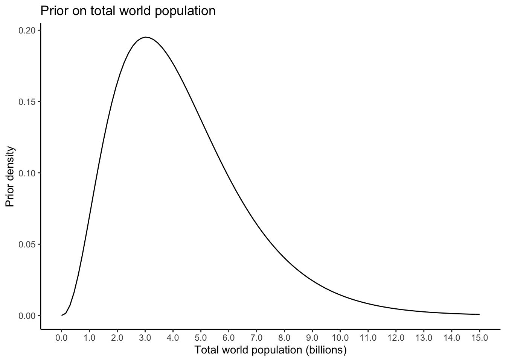
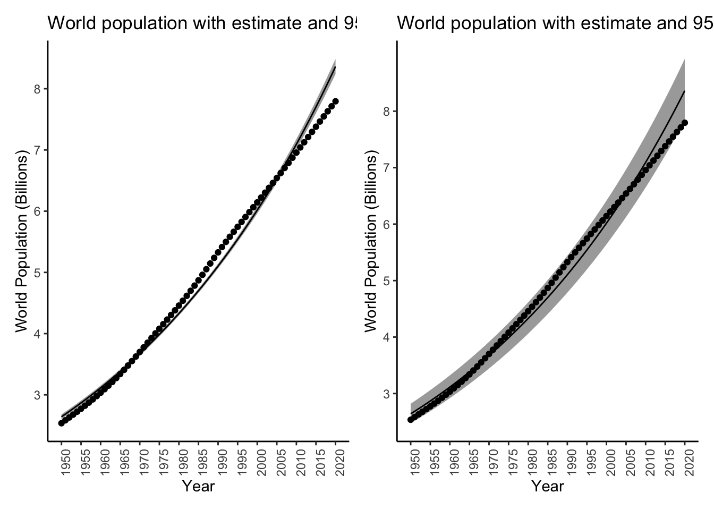

Chapter 15 Extended Example: World Population Data
In this chapter, we analyze the United Nations’ World Population Prospects data. These data contain estimated population sizes for each country for single years from 1950–2020, and projections for five year blocks from 2025–2100.
We will apply methods from each chapter of this course to answer questions about these data, the underlying true population of the world, and what the population will look like in the future. More specifically, we will:
Read in and prepare the data for analysis (Chapter 2),
Build a simple linear regression model for the total world population over time (Chapter 4),
Develop a Bayesian model for total world population (Chapter 6),
Quantify uncertainty in our estimate for total world population (Chapter 9),
Develop a Bayesian estimator for total world population (Chapter 11),
Predict the population to the year 2100 and compare our predictions and uncertainty quantification with those reported by the UN (Chapter 12).
15.1 Read in and prepare the data for analysis
The World Population Prospects data contain estimated population sizes for each country for single years from 1950–2020, and projections for five year blocks from 2025–2100. They are available for free download from that link. They are not in any form suitable for analysis, however. The data are contained in a spreadsheet with variables in both rows and columns, and summary statistics mixed in with the raw data.
I have done a bit of manual editing and posted the files to the book data folder
at data/worldpop/*. Let’s read in the data corresponding to the world population
estimates from 1950–2020. First, look at it, either in excel or on the command line:
head data/worldpop/worldpop-estimates.csvcountry,1950,1951,1952,1953,1954,1955,1956,1957,1958,1959,1960,1961,1962,1963,1964,1965,1966,1967,1968,1969,1970,1971,1972,1973,1974,1975,1976,1977,1978,1979,1980,1981,1982,1983,1984,1985,1986,1987,1988,1989,1990,1991,1992,1993,1994,1995,1996,1997,1998,1999,2000,2001,2002,2003,2004,2005,2006,2007,2008,2009,2010,2011,2012,2013,2014,2015,2016,2017,2018,2019,2020
WORLD, 2 536 431, 2 584 034, 2 630 862, 2 677 609, 2 724 847, 2 773 020, 2 822 443, 2 873 306, 2 925 687, 2 979 576, 3 034 950, 3 091 844, 3 150 421, 3 211 001, 3 273 978, 3 339 584, 3 407 923, 3 478 770, 3 551 599, 3 625 681, 3 700 437, 3 775 760, 3 851 651, 3 927 781, 4 003 794, 4 079 480, 4 154 667, 4 229 506, 4 304 534, 4 380 506, 4 458 003, 4 536 997, 4 617 387, 4 699 569, 4 784 012, 4 870 922, 4 960 568, 5 052 522, 5 145 426, 5 237 441, 5 327 231, 5 414 289, 5 498 920, 5 581 598, 5 663 150, 5 744 213, 5 824 892, 5 905 046, 5 984 794, 6 064 239, 6 143 494, 6 222 627, 6 301 773, 6 381 185, 6 461 159, 6 541 907, 6 623 518, 6 705 947, 6 789 089, 6 872 767, 6 956 824, 7 041 194, 7 125 828, 7 210 582, 7 295 291, 7 379 797, 7 464 022, 7 547 859, 7 631 091, 7 713 468, 7 794 799
Burundi, 2 309, 2 360, 2 406, 2 449, 2 492, 2 537, 2 585, 2 636, 2 689, 2 743, 2 798, 2 852, 2 907, 2 964, 3 026, 3 094, 3 170, 3 253, 3 337, 3 414, 3 479, 3 530, 3 570, 3 605, 3 646, 3 701, 3 771, 3 854, 3 949, 4 051, 4 157, 4 267, 4 380, 4 498, 4 621, 4 751, 4 887, 5 027, 5 169, 5 307, 5 439, 5 565, 5 686, 5 798, 5 899, 5 987, 6 060, 6 122, 6 186, 6 267, 6 379, 6 526, 6 704, 6 909, 7 132, 7 365, 7 608, 7 862, 8 126, 8 398, 8 676, 8 958, 9 246, 9 540, 9 844, 10 160, 10 488, 10 827, 11 175, 11 531, 11 891
Comoros, 159, 163, 167, 170, 173, 176, 179, 182, 185, 188, 191, 194, 197, 200, 204, 207, 211, 216, 221, 225, 230, 235, 239, 244, 250, 257, 266, 276, 287, 297, 308, 318, 327, 336, 345, 355, 366, 377, 388, 400, 412, 424, 436, 449, 462, 475, 489, 502, 515, 529, 542, 556, 569, 583, 597, 612, 626, 642, 657, 673, 690, 707, 724, 742, 759, 777, 796, 814, 832, 851, 870
Djibouti, 62, 63, 65, 66, 68, 70, 71, 74, 76, 80, 84, 89, 94, 101, 108, 115, 123, 131, 140, 150, 160, 169, 179, 191, 205, 224, 249, 277, 308, 336, 359, 375, 385, 394, 406, 426, 454, 490, 529, 564, 590, 607, 615, 619, 622, 630, 644, 661, 680, 700, 718, 733, 747, 760, 772, 783, 795, 805, 816, 828, 840, 854, 868, 883, 899, 914, 929, 944, 959, 974, 988
Eritrea, 822, 835, 849, 865, 882, 900, 919, 939, 961, 983, 1 008, 1 033, 1 060, 1 089, 1 118, 1 148, 1 179, 1 210, 1 243, 1 276, 1 311, 1 347, 1 385, 1 424, 1 464, 1 505, 1 548, 1 592, 1 637, 1 684, 1 733, 1 785, 1 837, 1 891, 1 946, 2 004, 2 065, 2 127, 2 186, 2 231, 2 259, 2 266, 2 258, 2 239, 2 218, 2 204, 2 196, 2 195, 2 206, 2 237, 2 292, 2 375, 2 481, 2 601, 2 720, 2 827, 2 918, 2 997, 3 063, 3 120, 3 170, 3 214, 3 250, 3 281, 3 311, 3 343, 3 377, 3 413, 3 453, 3 497, 3 546
Ethiopia, 18 128, 18 467, 18 820, 19 184, 19 560, 19 947, 20 348, 20 764, 21 201, 21 662, 22 151, 22 671, 23 221, 23 798, 24 397, 25 014, 25 641, 26 280, 26 944, 27 653, 28 415, 29 249, 30 141, 31 037, 31 861, 32 567, 33 128, 33 577, 33 993, 34 488, 35 142, 35 985, 36 995, 38 143, 39 374, 40 652, 41 966, 43 329, 44 757, 46 272, 47 888, 49 610, 51 424, 53 296, 55 181, 57 048, 58 884, 60 697, 62 508, 64 343, 66 225, 68 159, 70 142, 72 171, 74 240, 76 346, 78 489, 80 674, 82 916, 85 234, 87 640, 90 140, 92 727, 95 386, 98 094, 100 835, 103 603, 106 400, 109 224, 112 079, 114 964
Kenya, 6 077, 6 242, 6 416, 6 598, 6 789, 6 988, 7 195, 7 412, 7 638, 7 874, 8 120, 8 378, 8 647, 8 929, 9 223, 9 530, 9 851, 10 187, 10 540, 10 911, 11 301, 11 713, 12 146, 12 601, 13 077, 13 576, 14 096, 14 639, 15 205, 15 798, 16 417, 17 064, 17 736, 18 432, 19 146, 19 877, 20 623, 21 382, 22 154, 22 935, 23 725, 24 522, 25 326, 26 136, 26 951, 27 768, 28 589, 29 416, 30 250, 31 099, 31 965, 32 849, 33 752, 34 679, 35 635, 36 625, 37 649, 38 706, 39 792, 40 902, 42 031, 43 178, 44 343, 45 520, 46 700, 47 878, 49 052, 50 221, 51 393, 52 574, 53 771
Madagascar, 4 084, 4 168, 4 257, 4 349, 4 444, 4 544, 4 647, 4 754, 4 865, 4 980, 5 099, 5 224, 5 352, 5 486, 5 625, 5 769, 5 919, 6 074, 6 234, 6 402, 6 576, 6 758, 6 947, 7 143, 7 346, 7 556, 7 773, 7 998, 8 230, 8 470, 8 717, 8 971, 9 234, 9 504, 9 781, 10 063, 10 352, 10 648, 10 952, 11 269, 11 599, 11 943, 12 301, 12 675, 13 067, 13 475, 13 903, 14 348, 14 809, 15 283, 15 767, 16 261, 16 765, 17 279, 17 803, 18 337, 18 880, 19 434, 19 996, 20 569, 21 152, 21 744, 22 347, 22 961, 23 590, 24 234, 24 894, 25 571, 26 262, 26 969, 27 691
Malawi, 2 954, 3 012, 3 072, 3 136, 3 202, 3 271, 3 342, 3 417, 3 495, 3 576, 3 660, 3 748, 3 839, 3 934, 4 032, 4 134, 4 240, 4 350, 4 464, 4 582, 4 704, 4 829, 4 959, 5 093, 5 235, 5 385, 5 546, 5 718, 5 897, 6 075, 6 250, 6 412, 6 566, 6 738, 6 965, 7 268, 7 666, 8 141, 8 637, 9 076, 9 404, 9 600, 9 686, 9 710, 9 746, 9 844, 10 023, 10 265, 10 552, 10 854, 11 149, 11 432, 11 714, 12 000, 12 302, 12 626, 12 974, 13 342, 13 728, 14 128, 14 540, 14 962, 15 396, 15 839, 16 290, 16 745, 17 205, 17 670, 18 143, 18 629, 19 130There is one character column containing the country and then \((2020 - 1950 + 1) = 71\) numeric columns containing population counts.
Let’s read it in with those specs:
worldpop <- readr::read_csv(
file = "data/worldpop/worldpop-estimates.csv",
col_names = TRUE,
col_types = stringr::str_c(c("c",rep("n",71)),collapse = "")
)
glimpse(worldpop)Rows: 236
Columns: 72
$ country <chr> "WORLD", "Burundi", "Comoros", "Djibouti", "Eritrea", "Ethiopia", "Kenya", "Madagascar", "Malawi", "Mauritius", "Mayotte", "Mozambique", "Réunion", "Rwanda", "Seychelles", "Somalia", "South…
$ `1950` <dbl> 2, 2, 159, 62, 822, 18, 6, 4, 2, 493, 15, 5, 248, 2, 36, 2, 2, 5, 7, 2, 2, 4, 4, 1, 2, 827, 12, 226, 473, 60, 413, 273, 705, 514, 13, 2, 4, 178, 2, 305, 5, 3, 535, 930, 4, 651, 2, 37, 5, 2,…
$ `1951` <dbl> 2, 2, 163, 63, 835, 18, 6, 4, 3, 506, 16, 6, 259, 2, 37, 2, 2, 5, 7, 2, 2, 4, 4, 1, 2, 842, 12, 231, 476, 59, 424, 279, 717, 524, 13, 2, 4, 186, 2, 309, 5, 3, 544, 944, 4, 667, 2, 38, 5, 2,…
$ `1952` <dbl> 2, 2, 167, 65, 849, 18, 6, 4, 3, 521, 16, 6, 268, 2, 37, 2, 2, 5, 8, 2, 2, 4, 4, 1, 2, 858, 12, 234, 479, 59, 435, 285, 729, 534, 14, 2, 4, 191, 2, 314, 5, 3, 553, 959, 4, 683, 2, 39, 5, 2,…
$ `1953` <dbl> 2, 2, 170, 66, 865, 19, 6, 4, 3, 537, 17, 6, 277, 2, 38, 2, 2, 5, 8, 2, 3, 4, 4, 1, 2, 875, 12, 236, 481, 58, 445, 291, 741, 545, 14, 2, 4, 195, 2, 318, 5, 3, 560, 975, 4, 700, 2, 39, 5, 2,…
$ `1954` <dbl> 2, 2, 173, 68, 882, 19, 6, 4, 3, 554, 18, 6, 284, 2, 39, 2, 2, 5, 8, 2, 3, 4, 4, 1, 2, 893, 13, 238, 482, 58, 455, 297, 754, 556, 14, 2, 4, 196, 2, 324, 5, 3, 568, 993, 4, 719, 2, 40, 5, 2,…
$ `1955` <dbl> 2, 2, 176, 70, 900, 19, 6, 4, 3, 571, 19, 6, 292, 2, 39, 2, 2, 5, 8, 2, 3, 5, 4, 1, 2, 911, 13, 240, 484, 59, 463, 303, 767, 568, 15, 2, 4, 197, 3, 330, 5, 3, 576, 1, 4, 738, 2, 41, 5, 2, 2…
$ `1956` <dbl> 2, 2, 179, 71, 919, 20, 7, 4, 3, 588, 20, 6, 300, 2, 39, 2, 2, 6, 8, 2, 3, 5, 4, 1, 2, 930, 13, 242, 487, 60, 471, 309, 780, 580, 15, 2, 4, 197, 3, 336, 5, 3, 584, 1, 5, 759, 3, 41, 5, 2, 2…
$ `1957` <dbl> 2, 2, 182, 74, 939, 20, 7, 4, 3, 605, 21, 6, 308, 2, 40, 2, 2, 6, 9, 2, 3, 5, 4, 1, 2, 951, 14, 245, 489, 61, 479, 316, 794, 593, 15, 2, 4, 198, 3, 343, 6, 3, 593, 1, 5, 780, 3, 42, 5, 2, 2…
$ `1958` <dbl> 2, 2, 185, 76, 961, 21, 7, 4, 3, 623, 22, 6, 317, 2, 40, 2, 2, 6, 9, 2, 3, 5, 4, 1, 2, 972, 14, 248, 493, 62, 486, 323, 808, 606, 16, 2, 4, 198, 3, 350, 6, 3, 601, 1, 5, 803, 3, 43, 5, 3, 2…
$ `1959` <dbl> 2, 2, 188, 80, 983, 21, 7, 4, 3, 641, 23, 7, 326, 2, 41, 2, 2, 6, 9, 2, 3, 5, 5, 1, 2, 995, 14, 252, 497, 64, 494, 330, 822, 620, 16, 2, 4, 199, 3, 358, 6, 3, 609, 1, 5, 826, 3, 44, 5, 3, 2…
$ `1960` <dbl> 3, 2, 191, 84, 1, 22, 8, 5, 3, 660, 24, 7, 336, 2, 42, 2, 2, 6, 10, 3, 3, 5, 5, 1, 3, 1, 15, 255, 501, 64, 503, 337, 837, 634, 17, 2, 4, 202, 3, 365, 6, 3, 616, 1, 5, 850, 3, 45, 5, 3, 2, 1…
$ `1961` <dbl> 3, 2, 194, 89, 1, 22, 8, 5, 3, 679, 25, 7, 345, 2, 42, 2, 2, 6, 10, 3, 3, 5, 5, 1, 3, 1, 15, 259, 506, 65, 513, 343, 853, 649, 17, 2, 4, 205, 3, 372, 6, 3, 623, 1, 5, 876, 3, 46, 5, 3, 2, 1…
$ `1962` <dbl> 3, 2, 197, 94, 1, 23, 8, 5, 3, 698, 27, 7, 355, 3, 43, 2, 2, 7, 10, 3, 4, 5, 5, 1, 3, 1, 16, 262, 511, 64, 524, 350, 869, 665, 17, 2, 4, 210, 3, 380, 7, 3, 629, 1, 5, 902, 3, 47, 5, 3, 2, 1…
$ `1963` <dbl> 3, 2, 200, 101, 1, 23, 8, 5, 3, 717, 28, 7, 366, 3, 45, 2, 3, 7, 10, 3, 4, 5, 5, 1, 3, 1, 16, 266, 518, 64, 536, 357, 886, 682, 18, 2, 5, 216, 3, 388, 7, 3, 635, 1, 5, 929, 3, 48, 5, 3, 2, …
$ `1964` <dbl> 3, 3, 204, 108, 1, 24, 9, 5, 4, 736, 29, 7, 378, 3, 46, 3, 3, 7, 11, 3, 4, 5, 5, 1, 3, 1, 16, 271, 525, 64, 548, 365, 904, 699, 18, 2, 5, 223, 4, 396, 7, 3, 642, 1, 5, 957, 3, 49, 5, 3, 2, …
$ `1965` <dbl> 3, 3, 207, 115, 1, 25, 9, 5, 4, 753, 31, 8, 391, 3, 47, 3, 3, 7, 11, 3, 4, 5, 5, 1, 3, 1, 17, 276, 533, 65, 560, 374, 922, 717, 19, 2, 5, 230, 4, 405, 7, 3, 650, 1, 5, 986, 3, 50, 5, 3, 2, …
$ `1966` <dbl> 3, 3, 211, 123, 1, 25, 9, 5, 4, 770, 32, 8, 405, 3, 48, 3, 3, 8, 11, 3, 4, 5, 5, 1, 3, 1, 17, 284, 543, 66, 572, 384, 942, 735, 19, 2, 5, 239, 4, 415, 7, 3, 659, 1, 5, 1, 4, 51, 5, 3, 2, 1,…
$ `1967` <dbl> 3, 3, 216, 131, 1, 26, 10, 6, 4, 785, 33, 8, 421, 3, 49, 3, 3, 8, 12, 3, 4, 5, 6, 1, 3, 1, 18, 292, 554, 68, 584, 395, 962, 754, 20, 2, 5, 248, 4, 427, 8, 3, 669, 1, 5, 1, 4, 52, 5, 3, 2, 1…
$ `1968` <dbl> 3, 3, 221, 140, 1, 26, 10, 6, 4, 799, 34, 8, 437, 3, 50, 3, 3, 8, 12, 3, 4, 5, 6, 1, 3, 1, 18, 299, 566, 70, 597, 407, 984, 773, 20, 2, 5, 256, 4, 439, 8, 4, 680, 1, 5, 1, 4, 53, 6, 4, 2, 1…
$ `1969` <dbl> 3, 3, 225, 150, 1, 27, 10, 6, 4, 813, 36, 8, 451, 3, 51, 3, 3, 9, 13, 4, 5, 5, 6, 1, 3, 1, 19, 304, 578, 73, 611, 419, 1, 795, 21, 2, 5, 263, 4, 451, 8, 4, 692, 1, 5, 1, 4, 54, 6, 4, 2, 2, …
$ `1970` <dbl> 3, 3, 230, 160, 1, 28, 11, 6, 4, 826, 37, 9, 462, 3, 52, 3, 3, 9, 13, 4, 5, 5, 6, 1, 3, 1, 20, 304, 589, 75, 628, 431, 1, 817, 22, 2, 5, 269, 5, 464, 8, 4, 705, 1, 5, 1, 4, 55, 6, 4, 2, 2, …
$ `1971` <dbl> 3, 3, 235, 169, 1, 29, 11, 6, 4, 840, 39, 9, 470, 3, 54, 3, 3, 9, 13, 4, 5, 6, 6, 1, 3, 1, 20, 299, 601, 76, 646, 444, 1, 842, 22, 2, 5, 271, 5, 478, 8, 4, 718, 1, 6, 1, 4, 57, 6, 4, 2, 2, …
$ `1972` <dbl> 3, 3, 239, 179, 1, 30, 12, 6, 4, 852, 40, 9, 475, 3, 55, 3, 3, 9, 14, 4, 5, 6, 6, 1, 3, 1, 21, 290, 612, 78, 667, 457, 1, 869, 23, 3, 5, 272, 5, 492, 9, 4, 733, 1, 6, 1, 4, 58, 6, 4, 2, 2, …
$ `1973` <dbl> 3, 3, 244, 191, 1, 31, 12, 7, 5, 865, 42, 9, 479, 4, 57, 3, 3, 10, 14, 4, 5, 6, 7, 1, 3, 1, 21, 278, 623, 79, 690, 471, 1, 896, 23, 3, 5, 271, 5, 507, 9, 4, 746, 1, 6, 1, 4, 60, 6, 4, 2, 2,…
$ `1974` <dbl> 4, 3, 250, 205, 1, 31, 13, 7, 5, 878, 44, 9, 482, 4, 58, 3, 3, 10, 15, 4, 6, 6, 7, 1, 4, 1, 22, 266, 635, 81, 715, 485, 1, 923, 24, 3, 6, 270, 6, 523, 9, 4, 758, 1, 6, 1, 5, 61, 6, 4, 2, 2,…
$ `1975` <dbl> 4, 3, 257, 224, 1, 32, 13, 7, 5, 892, 45, 10, 485, 4, 60, 3, 3, 10, 15, 4, 6, 7, 7, 1, 4, 1, 22, 256, 648, 83, 741, 500, 1, 948, 25, 3, 6, 270, 6, 540, 9, 4, 766, 1, 6, 1, 5, 63, 6, 4, 3, 2…
$ `1976` <dbl> 4, 3, 266, 249, 1, 33, 14, 7, 5, 907, 47, 10, 488, 4, 61, 4, 4, 11, 16, 5, 6, 7, 7, 1, 4, 1, 23, 248, 661, 85, 770, 516, 1, 971, 25, 3, 6, 271, 6, 558, 10, 4, 770, 1, 6, 1, 5, 65, 6, 5, 3, …
$ `1977` <dbl> 4, 3, 276, 277, 1, 33, 14, 7, 5, 922, 49, 10, 492, 4, 62, 4, 4, 11, 16, 5, 6, 7, 7, 2, 4, 1, 24, 242, 676, 88, 801, 532, 1, 993, 26, 3, 6, 273, 7, 577, 10, 4, 772, 1, 6, 1, 5, 67, 6, 5, 3, …
$ `1978` <dbl> 4, 3, 287, 308, 1, 33, 15, 8, 5, 938, 51, 11, 497, 4, 64, 5, 4, 11, 17, 5, 6, 7, 8, 2, 4, 1, 24, 240, 692, 91, 832, 550, 1, 1, 27, 3, 6, 276, 7, 597, 10, 4, 772, 1, 6, 1, 5, 69, 6, 5, 3, 2,…
$ `1979` <dbl> 4, 4, 297, 336, 1, 34, 15, 8, 6, 953, 53, 11, 502, 4, 65, 5, 4, 12, 17, 5, 7, 8, 8, 2, 4, 1, 25, 242, 709, 93, 865, 568, 1, 1, 27, 3, 6, 280, 7, 617, 10, 4, 775, 1, 6, 1, 5, 71, 7, 5, 3, 2,…
$ `1980` <dbl> 4, 4, 308, 359, 1, 35, 16, 8, 6, 966, 55, 11, 509, 5, 66, 6, 4, 12, 18, 5, 7, 8, 8, 2, 4, 1, 26, 250, 726, 96, 898, 588, 1, 1, 28, 3, 6, 284, 8, 637, 11, 4, 782, 1, 7, 1, 5, 73, 7, 5, 3, 2,…
$ `1981` <dbl> 4, 4, 318, 375, 1, 35, 17, 8, 6, 978, 58, 11, 517, 5, 67, 6, 4, 12, 19, 6, 7, 8, 8, 2, 4, 1, 27, 264, 745, 98, 930, 608, 1, 1, 29, 3, 6, 289, 8, 658, 11, 4, 794, 1, 7, 1, 6, 75, 7, 5, 3, 2,…
$ `1982` <dbl> 4, 4, 327, 385, 1, 36, 17, 9, 6, 989, 61, 12, 527, 5, 68, 6, 4, 13, 19, 6, 7, 8, 9, 2, 4, 1, 27, 285, 764, 99, 963, 630, 1, 1, 30, 3, 7, 294, 8, 678, 11, 5, 810, 1, 7, 1, 6, 77, 7, 5, 3, 2,…
$ `1983` <dbl> 4, 4, 336, 394, 1, 38, 18, 9, 6, 999, 64, 12, 537, 5, 69, 6, 4, 13, 20, 6, 8, 9, 9, 2, 4, 1, 28, 308, 784, 101, 996, 652, 1, 1, 30, 4, 7, 300, 9, 700, 12, 5, 830, 2, 7, 1, 6, 79, 7, 6, 3, 3…
$ `1984` <dbl> 4, 4, 345, 406, 1, 39, 19, 9, 6, 1, 68, 12, 548, 5, 69, 6, 5, 14, 20, 6, 8, 9, 9, 2, 4, 1, 29, 332, 805, 103, 1, 675, 1, 1, 31, 4, 7, 306, 9, 726, 12, 5, 851, 2, 7, 1, 6, 81, 7, 6, 3, 3, 21…
$ `1985` <dbl> 4, 4, 355, 426, 2, 40, 19, 10, 7, 1, 72, 12, 559, 6, 70, 6, 5, 14, 21, 6, 8, 9, 10, 2, 5, 2, 29, 352, 827, 105, 1, 699, 1, 1, 32, 4, 7, 312, 9, 756, 12, 5, 872, 2, 7, 1, 6, 83, 7, 6, 3, 3, …
$ `1986` <dbl> 4, 4, 366, 454, 2, 41, 20, 10, 7, 1, 76, 12, 569, 6, 70, 6, 5, 15, 22, 7, 9, 10, 10, 2, 5, 2, 30, 369, 850, 107, 1, 724, 1, 1, 33, 4, 7, 317, 10, 791, 13, 5, 893, 2, 7, 1, 7, 85, 7, 6, 3, 3…
$ `1987` <dbl> 5, 5, 377, 490, 2, 43, 21, 10, 8, 1, 80, 12, 579, 6, 70, 6, 5, 15, 22, 7, 9, 10, 10, 2, 5, 2, 31, 383, 874, 110, 1, 749, 1, 1, 34, 4, 8, 321, 10, 831, 13, 5, 913, 2, 8, 1, 7, 88, 7, 6, 4, 3…
$ `1988` <dbl> 5, 5, 388, 529, 2, 44, 22, 10, 8, 1, 85, 12, 589, 7, 70, 7, 5, 16, 23, 7, 9, 11, 11, 2, 5, 2, 32, 395, 898, 113, 1, 774, 1, 1, 35, 4, 8, 326, 11, 873, 13, 5, 933, 2, 8, 1, 7, 90, 7, 7, 4, 3…
$ `1989` <dbl> 5, 5, 400, 564, 2, 46, 22, 11, 9, 1, 90, 12, 599, 7, 70, 7, 5, 16, 24, 7, 10, 11, 11, 2, 5, 2, 33, 407, 924, 116, 1, 798, 1, 1, 35, 4, 8, 331, 11, 916, 14, 6, 954, 2, 8, 1, 7, 92, 7, 7, 4, …
$ `1990` <dbl> 5, 5, 412, 590, 2, 47, 23, 11, 9, 1, 95, 12, 611, 7, 71, 7, 5, 17, 25, 8, 10, 11, 11, 2, 5, 2, 34, 419, 949, 119, 1, 822, 1, 1, 36, 4, 8, 338, 11, 956, 14, 6, 975, 2, 8, 2, 8, 95, 7, 7, 4, …
$ `1991` <dbl> 5, 5, 424, 607, 2, 49, 24, 11, 9, 1, 100, 13, 622, 7, 71, 7, 5, 17, 26, 8, 10, 12, 12, 2, 6, 2, 35, 433, 976, 122, 1, 845, 1, 1, 37, 5, 9, 346, 12, 993, 15, 6, 998, 2, 8, 2, 8, 97, 7, 7, 4,…
$ `1992` <dbl> 5, 5, 436, 615, 2, 51, 25, 12, 9, 1, 106, 13, 635, 6, 73, 7, 5, 18, 26, 8, 10, 12, 12, 2, 6, 2, 37, 447, 1, 125, 1, 867, 1, 1, 38, 5, 9, 356, 12, 1, 15, 6, 1, 2, 8, 2, 8, 100, 6, 7, 4, 3, 2…
$ `1993` <dbl> 5, 5, 449, 619, 2, 53, 26, 12, 9, 1, 112, 14, 648, 6, 74, 7, 5, 19, 27, 8, 11, 13, 12, 3, 6, 2, 38, 463, 1, 127, 1, 888, 1, 1, 39, 5, 9, 366, 13, 1, 16, 6, 1, 1, 9, 2, 8, 102, 6, 8, 4, 4, 2…
$ `1994` <dbl> 5, 5, 462, 622, 2, 55, 26, 13, 9, 1, 117, 14, 661, 5, 75, 7, 5, 19, 28, 8, 11, 13, 13, 3, 6, 2, 40, 479, 1, 129, 1, 908, 1, 1, 40, 5, 9, 376, 13, 1, 16, 7, 1, 1, 9, 2, 9, 105, 6, 8, 4, 4, 2…
$ `1995` <dbl> 5, 5, 475, 630, 2, 57, 27, 13, 9, 1, 123, 15, 674, 5, 77, 7, 5, 20, 29, 9, 11, 13, 13, 3, 7, 2, 41, 497, 1, 132, 1, 927, 1, 1, 41, 5, 10, 386, 14, 1, 17, 7, 1, 2, 9, 2, 9, 107, 6, 8, 4, 4, …
$ `1996` <dbl> 5, 6, 489, 644, 2, 58, 28, 13, 10, 1, 129, 15, 686, 6, 78, 7, 5, 21, 30, 9, 11, 14, 13, 3, 7, 2, 42, 516, 1, 134, 1, 946, 1, 1, 42, 6, 10, 396, 14, 1, 17, 7, 1, 2, 9, 2, 9, 110, 6, 8, 4, 4,…
$ `1997` <dbl> 5, 6, 502, 661, 2, 60, 29, 14, 10, 1, 134, 16, 699, 6, 78, 7, 5, 21, 31, 9, 11, 14, 14, 3, 7, 2, 43, 536, 1, 136, 1, 963, 1, 1, 42, 6, 10, 404, 15, 1, 17, 7, 1, 2, 10, 2, 10, 113, 6, 9, 4, …
$ `1998` <dbl> 5, 6, 515, 680, 2, 62, 30, 14, 10, 1, 140, 16, 712, 6, 79, 8, 5, 22, 31, 9, 11, 15, 14, 3, 7, 2, 44, 558, 1, 138, 1, 980, 1, 1, 43, 6, 10, 413, 15, 1, 18, 7, 1, 2, 10, 2, 10, 116, 6, 9, 4, …
$ `1999` <dbl> 6, 6, 529, 700, 2, 64, 31, 15, 10, 1, 145, 17, 724, 7, 80, 8, 5, 22, 32, 10, 11, 15, 15, 3, 8, 3, 45, 582, 1, 140, 1, 994, 2, 1, 44, 6, 11, 420, 16, 1, 18, 8, 1, 2, 10, 2, 10, 119, 6, 9, 4,…
$ `2000` <dbl> 6, 6, 542, 718, 2, 66, 31, 15, 11, 1, 150, 17, 737, 7, 81, 8, 6, 23, 33, 10, 11, 16, 15, 3, 8, 3, 47, 606, 1, 142, 1, 1, 2, 1, 44, 6, 11, 428, 16, 1, 19, 8, 1, 2, 10, 2, 11, 122, 6, 9, 4, 4…
$ `2001` <dbl> 6, 6, 556, 733, 2, 68, 32, 16, 11, 1, 156, 18, 749, 8, 82, 9, 6, 24, 34, 10, 11, 16, 15, 3, 8, 3, 48, 632, 1, 145, 1, 1, 2, 1, 45, 7, 11, 436, 16, 1, 19, 8, 1, 2, 11, 2, 11, 125, 6, 10, 4, …
$ `2002` <dbl> 6, 6, 569, 747, 2, 70, 33, 16, 11, 1, 161, 18, 760, 8, 84, 9, 6, 25, 35, 10, 11, 17, 16, 3, 9, 3, 49, 658, 1, 147, 1, 1, 2, 1, 46, 7, 12, 443, 17, 1, 20, 8, 1, 3, 11, 2, 12, 128, 6, 10, 4, …
$ `2003` <dbl> 6, 6, 583, 760, 2, 72, 34, 17, 12, 1, 167, 19, 771, 8, 86, 9, 6, 25, 36, 11, 11, 18, 16, 3, 9, 3, 51, 687, 1, 150, 1, 1, 2, 1, 46, 7, 12, 450, 17, 1, 20, 8, 1, 3, 11, 2, 12, 131, 6, 10, 5, …
$ `2004` <dbl> 6, 7, 597, 772, 2, 74, 35, 17, 12, 1, 172, 19, 782, 8, 87, 10, 7, 26, 37, 11, 12, 18, 17, 3, 9, 3, 53, 717, 1, 154, 1, 1, 2, 1, 47, 7, 13, 457, 17, 1, 21, 8, 1, 3, 12, 2, 13, 135, 5, 10, 5,…
$ `2005` <dbl> 6, 7, 612, 783, 2, 76, 36, 18, 12, 1, 178, 20, 792, 8, 89, 10, 7, 27, 38, 11, 12, 19, 17, 4, 10, 3, 54, 750, 1, 157, 1, 1, 1, 1, 47, 7, 13, 463, 18, 1, 21, 9, 1, 3, 12, 3, 13, 138, 5, 11, 5…
$ `2006` <dbl> 6, 7, 626, 795, 2, 78, 37, 18, 12, 1, 184, 21, 801, 9, 90, 10, 7, 28, 39, 12, 12, 20, 18, 4, 10, 3, 56, 784, 1, 162, 1, 1, 1, 1, 48, 8, 13, 469, 18, 1, 22, 9, 1, 3, 13, 3, 14, 142, 5, 11, 5…
$ `2007` <dbl> 6, 7, 642, 805, 2, 80, 38, 19, 13, 1, 190, 21, 809, 9, 90, 11, 8, 29, 40, 12, 12, 20, 18, 4, 10, 3, 58, 822, 1, 166, 1, 1, 1, 2, 49, 8, 14, 475, 19, 1, 22, 9, 1, 3, 13, 3, 14, 146, 5, 11, 5…
$ `2008` <dbl> 6, 8, 657, 816, 3, 82, 39, 19, 13, 1, 196, 22, 816, 9, 90, 11, 8, 30, 41, 12, 12, 21, 19, 4, 11, 4, 60, 861, 1, 171, 1, 1, 1, 2, 49, 8, 14, 481, 19, 1, 23, 9, 1, 3, 14, 3, 15, 150, 5, 12, 6…
$ `2009` <dbl> 6, 8, 673, 828, 3, 85, 40, 20, 14, 1, 202, 22, 824, 9, 91, 11, 9, 31, 43, 13, 12, 22, 19, 4, 11, 4, 62, 902, 1, 176, 1, 1, 1, 2, 50, 8, 15, 487, 20, 1, 24, 9, 1, 3, 14, 3, 15, 154, 5, 12, 6…
$ `2010` <dbl> 6, 8, 690, 840, 3, 87, 42, 21, 14, 1, 209, 23, 831, 10, 91, 12, 9, 32, 44, 13, 12, 23, 20, 4, 11, 4, 64, 944, 1, 180, 1, 1, 1, 2, 51, 9, 15, 493, 20, 1, 24, 10, 1, 3, 15, 3, 16, 158, 5, 12,…
$ `2011` <dbl> 7, 8, 707, 854, 3, 90, 43, 21, 14, 1, 215, 24, 837, 10, 92, 12, 9, 33, 45, 14, 12, 24, 20, 4, 12, 4, 66, 987, 1, 185, 2, 1, 2, 2, 52, 9, 16, 499, 21, 1, 25, 10, 1, 4, 15, 3, 17, 162, 5, 13,…
$ `2012` <dbl> 7, 9, 724, 868, 3, 92, 44, 22, 15, 1, 221, 24, 844, 10, 93, 12, 10, 34, 47, 14, 13, 25, 21, 4, 12, 4, 69, 1, 1, 188, 2, 1, 2, 2, 52, 9, 16, 505, 21, 1, 25, 10, 1, 4, 15, 3, 17, 167, 5, 13, …
$ `2013` <dbl> 7, 9, 742, 883, 3, 95, 45, 22, 15, 1, 227, 25, 851, 10, 93, 13, 10, 35, 48, 14, 13, 26, 22, 4, 13, 4, 71, 1, 1, 192, 2, 1, 2, 2, 53, 10, 17, 512, 22, 1, 26, 10, 1, 4, 16, 3, 18, 171, 6, 13,…
$ `2014` <dbl> 7, 9, 759, 899, 3, 98, 46, 23, 16, 1, 234, 26, 857, 11, 94, 13, 10, 36, 49, 15, 13, 26, 22, 4, 13, 4, 73, 1, 1, 196, 2, 1, 2, 2, 54, 10, 17, 518, 22, 2, 27, 11, 1, 4, 16, 3, 19, 176, 6, 14,…
$ `2015` <dbl> 7, 10, 777, 914, 3, 100, 47, 24, 16, 1, 240, 27, 863, 11, 95, 13, 10, 38, 51, 15, 13, 27, 23, 4, 14, 4, 76, 1, 1, 199, 2, 1, 2, 2, 55, 10, 18, 525, 23, 2, 27, 11, 1, 4, 17, 4, 20, 181, 6, 1…
$ `2016` <dbl> 7, 10, 796, 929, 3, 103, 49, 24, 17, 1, 246, 27, 870, 11, 96, 14, 10, 39, 53, 16, 14, 28, 23, 4, 14, 4, 78, 1, 2, 203, 2, 1, 2, 2, 56, 10, 18, 531, 23, 2, 28, 11, 1, 4, 17, 4, 20, 185, 6, 1…
$ `2017` <dbl> 7, 10, 814, 944, 3, 106, 50, 25, 17, 1, 253, 28, 876, 11, 96, 14, 10, 41, 54, 16, 14, 29, 24, 4, 15, 5, 81, 1, 2, 207, 2, 1, 2, 2, 57, 11, 19, 537, 24, 2, 29, 12, 1, 4, 18, 4, 21, 190, 6, 1…
$ `2018` <dbl> 7, 11, 832, 959, 3, 109, 51, 26, 18, 1, 260, 29, 883, 12, 97, 15, 10, 42, 56, 17, 14, 30, 25, 4, 15, 5, 84, 1, 2, 211, 2, 1, 2, 2, 57, 11, 19, 544, 25, 2, 29, 12, 1, 4, 19, 4, 22, 195, 6, 1…
$ `2019` <dbl> 7, 11, 851, 974, 3, 112, 52, 26, 18, 1, 266, 30, 889, 12, 98, 15, 11, 44, 58, 17, 14, 31, 25, 4, 15, 5, 86, 1, 2, 215, 2, 1, 2, 2, 58, 11, 20, 550, 25, 2, 30, 12, 1, 4, 19, 4, 23, 200, 6, 1…
$ `2020` <dbl> 7, 11, 870, 988, 3, 114, 53, 27, 19, 1, 273, 31, 895, 12, 98, 15, 11, 45, 59, 18, 14, 32, 26, 4, 16, 5, 89, 1, 2, 219, 2, 1, 2, 2, 59, 12, 20, 556, 26, 2, 31, 13, 1, 5, 20, 4, 24, 206, 6, 1…Does that look correct to you?
No. Why is the world population only 2 for 1950? If you read the documentation for the data, you may notice that population is recorded in thousands, but I still think that there were more than \(2,000\) people in the world in 1950. Also, I’m pretty sure the single country of Comoros shouldn’t have more people than the entire world.
Always look at the data when you read it in.
The problem is debugged by printing the data out on the command line like we did above,
and noticing that in the original file, numbers are stored with spaces in them.
We have to remove these spaces for R to read in the data correctly. This kind
of simple but annoying thing happens all the time when analyzing data “in the wild.”
To remove the spaces (this works for any annoying character like a period, or a
dollar sign, or whatever), read the data in with all columns as character, process
the data in R, and then convert to numeric. Check it out:
remove_space <- function(x) stringr::str_remove_all(x," ")
worldpop <- readr::read_csv(
file = "data/worldpop/worldpop-estimates.csv",
col_names = TRUE,
col_types = stringr::str_c(rep("c",72),collapse = "")
) %>%
# Remove the space
mutate_at(vars(`1950`:`2020`),remove_space) %>%
# Convert to numeric
mutate_at(vars(`1950`:`2020`),as.numeric)
glimpse(worldpop)Rows: 236
Columns: 72
$ country <chr> "WORLD", "Burundi", "Comoros", "Djibouti", "Eritrea", "Ethiopia", "Kenya", "Madagascar", "Malawi", "Mauritius", "Mayotte", "Mozambique", "Réunion", "Rwanda", "Seychelles", "Somalia", "South…
$ `1950` <dbl> 2536431, 2309, 159, 62, 822, 18128, 6077, 4084, 2954, 493, 15, 5959, 248, 2186, 36, 2264, 2482, 5158, 7650, 2310, 2747, 4548, 4307, 1327, 2502, 827, 12184, 226, 473, 60, 413, 273, 705, 514,…
$ `1951` <dbl> 2584034, 2360, 163, 63, 835, 18467, 6242, 4168, 3012, 506, 16, 6059, 259, 2251, 37, 2308, 2502, 5308, 7845, 2369, 2832, 4617, 4384, 1342, 2544, 842, 12429, 231, 476, 59, 424, 279, 717, 524,…
$ `1952` <dbl> 2630862, 2406, 167, 65, 849, 18820, 6416, 4257, 3072, 521, 16, 6165, 268, 2314, 37, 2352, 2525, 5453, 8051, 2431, 2922, 4713, 4462, 1356, 2589, 858, 12681, 234, 479, 59, 435, 285, 729, 534,…
$ `1953` <dbl> 2677609, 2449, 170, 66, 865, 19184, 6598, 4349, 3136, 537, 17, 6275, 277, 2380, 38, 2397, 2553, 5596, 8267, 2498, 3016, 4823, 4542, 1371, 2636, 875, 12944, 236, 481, 58, 445, 291, 741, 545,…
$ `1954` <dbl> 2724847, 2492, 173, 68, 882, 19560, 6789, 4444, 3202, 554, 18, 6390, 284, 2450, 39, 2444, 2585, 5741, 8494, 2570, 3113, 4936, 4623, 1385, 2685, 893, 13223, 238, 482, 58, 455, 297, 754, 556,…
$ `1955` <dbl> 2773020, 2537, 176, 70, 900, 19947, 6988, 4544, 3271, 571, 19, 6508, 292, 2527, 39, 2492, 2620, 5889, 8730, 2645, 3213, 5043, 4707, 1401, 2735, 911, 13518, 240, 484, 59, 463, 303, 767, 568,…
$ `1956` <dbl> 2822443, 2585, 179, 71, 919, 20348, 7195, 4647, 3342, 588, 20, 6632, 300, 2610, 39, 2541, 2658, 6043, 8975, 2724, 3317, 5141, 4793, 1418, 2786, 930, 13830, 242, 487, 60, 471, 309, 780, 580,…
$ `1957` <dbl> 2873306, 2636, 182, 74, 939, 20764, 7412, 4754, 3417, 605, 21, 6760, 308, 2696, 40, 2592, 2700, 6206, 9230, 2806, 3425, 5228, 4883, 1437, 2838, 951, 14161, 245, 489, 61, 479, 316, 794, 593,…
$ `1958` <dbl> 2925687, 2689, 185, 76, 961, 21201, 7638, 4865, 3495, 623, 22, 6894, 317, 2782, 40, 2645, 2745, 6379, 9494, 2892, 3537, 5307, 4976, 1457, 2891, 972, 14509, 248, 493, 62, 486, 323, 808, 606,…
$ `1959` <dbl> 2979576, 2743, 188, 80, 983, 21662, 7874, 4980, 3576, 641, 23, 7036, 326, 2863, 41, 2700, 2792, 6566, 9768, 2980, 3654, 5381, 5074, 1479, 2945, 995, 14872, 252, 497, 64, 494, 330, 822, 620,…
$ `1960` <dbl> 3034950, 2798, 191, 84, 1008, 22151, 8120, 5099, 3660, 660, 24, 7185, 336, 2936, 42, 2756, 2843, 6767, 10052, 3071, 3777, 5455, 5177, 1502, 3002, 1018, 15248, 255, 501, 64, 503, 337, 837, 6…
$ `1961` <dbl> 3091844, 2852, 194, 89, 1033, 22671, 8378, 5224, 3748, 679, 25, 7342, 345, 2998, 42, 2814, 2896, 6984, 10347, 3164, 3905, 5531, 5285, 1526, 3060, 1043, 15638, 259, 506, 65, 513, 343, 853, 6…
$ `1962` <dbl> 3150421, 2907, 197, 94, 1060, 23221, 8647, 5352, 3839, 698, 27, 7507, 355, 3053, 43, 2874, 2951, 7216, 10652, 3261, 4039, 5608, 5399, 1552, 3121, 1069, 16041, 262, 511, 64, 524, 350, 869, 6…
$ `1963` <dbl> 3211001, 2964, 200, 101, 1089, 23798, 8929, 5486, 3934, 717, 28, 7679, 366, 3105, 45, 2936, 3009, 7462, 10968, 3360, 4179, 5679, 5518, 1579, 3184, 1097, 16462, 266, 518, 64, 536, 357, 886, …
$ `1964` <dbl> 3273978, 3026, 204, 108, 1118, 24397, 9223, 5625, 4032, 736, 29, 7857, 378, 3164, 46, 3001, 3070, 7719, 11296, 3463, 4323, 5735, 5643, 1609, 3247, 1125, 16904, 271, 525, 64, 548, 365, 904, …
$ `1965` <dbl> 3339584, 3094, 207, 115, 1148, 25014, 9530, 5769, 4134, 753, 31, 8039, 391, 3236, 47, 3068, 3133, 7986, 11635, 3570, 4471, 5771, 5774, 1640, 3310, 1155, 17370, 276, 533, 65, 560, 374, 922, …
$ `1966` <dbl> 3407923, 3170, 211, 123, 1179, 25641, 9851, 5919, 4240, 770, 32, 8226, 405, 3322, 48, 3144, 3199, 8263, 11985, 3682, 4623, 5781, 5910, 1673, 3372, 1187, 17862, 284, 543, 66, 572, 384, 942, …
$ `1967` <dbl> 3478770, 3253, 216, 131, 1210, 26280, 10187, 6074, 4350, 785, 33, 8418, 421, 3421, 49, 3228, 3268, 8550, 12348, 3798, 4780, 5774, 6052, 1708, 3435, 1220, 18379, 292, 554, 68, 584, 395, 962,…
$ `1968` <dbl> 3551599, 3337, 221, 140, 1243, 26944, 10540, 6234, 4464, 799, 34, 8614, 437, 3530, 50, 3313, 3340, 8841, 12726, 3919, 4942, 5772, 6201, 1744, 3499, 1254, 18914, 299, 566, 70, 597, 407, 984,…
$ `1969` <dbl> 3625681, 3414, 225, 150, 1276, 27653, 10911, 6402, 4582, 813, 36, 8816, 451, 3643, 51, 3387, 3416, 9128, 13121, 4046, 5111, 5804, 6357, 1779, 3568, 1290, 19460, 304, 578, 73, 611, 419, 1006…
$ `1970` <dbl> 3700437, 3479, 230, 160, 1311, 28415, 11301, 6576, 4704, 826, 37, 9023, 462, 3757, 52, 3445, 3494, 9406, 13535, 4179, 5289, 5890, 6520, 1811, 3644, 1327, 20011, 304, 589, 75, 628, 431, 1029…
$ `1971` <dbl> 3775760, 3530, 235, 169, 1347, 29249, 11713, 6758, 4829, 840, 39, 9233, 470, 3871, 54, 3472, 3576, 9672, 13972, 4319, 5477, 6041, 6690, 1841, 3726, 1366, 20564, 299, 601, 76, 646, 444, 1053…
$ `1972` <dbl> 3851651, 3570, 239, 179, 1385, 30141, 12146, 6947, 4959, 852, 40, 9446, 475, 3987, 55, 3480, 3661, 9930, 14428, 4466, 5674, 6249, 6867, 1868, 3815, 1407, 21121, 290, 612, 78, 667, 457, 1077…
$ `1973` <dbl> 3927781, 3605, 244, 191, 1424, 31037, 12601, 7143, 5093, 865, 42, 9669, 479, 4106, 57, 3513, 3751, 10186, 14902, 4620, 5878, 6497, 7053, 1895, 3908, 1449, 21690, 278, 623, 79, 690, 471, 110…
$ `1974` <dbl> 4003794, 3646, 250, 205, 1464, 31861, 13077, 7346, 5235, 878, 44, 9907, 482, 4232, 58, 3633, 3844, 10453, 15389, 4779, 6085, 6762, 7247, 1924, 4000, 1492, 22282, 266, 635, 81, 715, 485, 113…
$ `1975` <dbl> 4079480, 3701, 257, 224, 1505, 32567, 13576, 7556, 5385, 892, 45, 10165, 485, 4365, 60, 3880, 3942, 10737, 15885, 4943, 6294, 7024, 7451, 1958, 4089, 1537, 22904, 256, 648, 83, 741, 500, 11…
$ `1976` <dbl> 4154667, 3771, 266, 249, 1548, 33128, 14096, 7773, 5546, 907, 47, 10444, 488, 4506, 61, 4279, 4042, 11043, 16390, 5113, 6503, 7280, 7664, 1997, 4173, 1582, 23560, 248, 661, 85, 770, 516, 11…
$ `1977` <dbl> 4229506, 3854, 276, 277, 1592, 33577, 14639, 7998, 5718, 922, 49, 10739, 492, 4655, 62, 4802, 4145, 11369, 16905, 5288, 6713, 7534, 7888, 2040, 4255, 1629, 24249, 242, 676, 88, 801, 532, 12…
$ `1978` <dbl> 4304534, 3949, 287, 308, 1637, 33993, 15205, 8230, 5897, 938, 51, 11041, 497, 4813, 64, 5375, 4253, 11713, 17433, 5468, 6930, 7791, 8121, 2088, 4337, 1677, 24956, 240, 692, 91, 832, 550, 12…
$ `1979` <dbl> 4380506, 4051, 297, 336, 1684, 34488, 15798, 8470, 6075, 953, 53, 11341, 502, 4979, 65, 5893, 4372, 12071, 17976, 5656, 7160, 8058, 8366, 2141, 4423, 1727, 25664, 242, 709, 93, 865, 568, 13…
$ `1980` <dbl> 4458003, 4157, 308, 359, 1733, 35142, 16417, 8717, 6250, 966, 55, 11630, 509, 5153, 66, 6281, 4503, 12442, 18538, 5852, 7409, 8341, 8621, 2199, 4514, 1778, 26359, 250, 726, 96, 898, 588, 13…
$ `1981` <dbl> 4536997, 4267, 318, 375, 1785, 35985, 17064, 8971, 6412, 978, 58, 11913, 517, 5329, 67, 6511, 4646, 12825, 19121, 6055, 7676, 8640, 8889, 2264, 4613, 1831, 27040, 264, 745, 98, 930, 608, 13…
$ `1982` <dbl> 4617387, 4380, 327, 385, 1837, 36995, 17736, 9234, 6566, 989, 61, 12190, 527, 5505, 68, 6608, 4799, 13222, 19723, 6266, 7958, 8953, 9167, 2335, 4718, 1885, 27717, 285, 764, 99, 963, 630, 14…
$ `1983` <dbl> 4699569, 4498, 336, 394, 1891, 38143, 18432, 9504, 6738, 999, 64, 12440, 537, 5691, 69, 6619, 4953, 13639, 20345, 6482, 8255, 9278, 9456, 2408, 4832, 1940, 28404, 308, 784, 101, 996, 652, 1…
$ `1984` <dbl> 4784012, 4621, 345, 406, 1946, 39374, 19146, 9781, 6965, 1008, 68, 12636, 548, 5903, 69, 6615, 5096, 14083, 20982, 6702, 8562, 9615, 9758, 2478, 4958, 1997, 29120, 332, 805, 103, 1031, 675,…
$ `1985` <dbl> 4870922, 4751, 355, 426, 2004, 40652, 19877, 10063, 7268, 1016, 72, 12764, 559, 6147, 70, 6649, 5221, 14559, 21634, 6923, 8877, 9962, 10071, 2542, 5095, 2054, 29881, 352, 827, 105, 1070, 69…
$ `1986` <dbl> 4960568, 4887, 366, 454, 2065, 41966, 20623, 10352, 7666, 1023, 76, 12809, 569, 6444, 70, 6737, 5328, 15070, 22296, 7147, 9200, 10320, 10395, 2598, 5247, 2112, 30684, 369, 850, 107, 1111, 7…
$ `1987` <dbl> 5052522, 5027, 377, 490, 2127, 43329, 21382, 10648, 8141, 1030, 80, 12786, 579, 6780, 70, 6862, 5420, 15613, 22971, 7373, 9527, 10689, 10731, 2647, 5413, 2171, 31529, 383, 874, 110, 1155, 7…
$ `1988` <dbl> 5145426, 5169, 388, 529, 2186, 44757, 22154, 10952, 8637, 1037, 85, 12758, 589, 7088, 70, 7005, 5485, 16180, 23671, 7598, 9849, 11068, 11075, 2694, 5590, 2231, 32444, 395, 898, 113, 1200, 7…
$ `1989` <dbl> 5237441, 5307, 400, 564, 2231, 46272, 22935, 11269, 9076, 1046, 90, 12806, 599, 7277, 70, 7133, 5512, 16763, 24412, 7820, 10154, 11455, 11426, 2746, 5774, 2293, 33465, 407, 924, 116, 1244, …
$ `1990` <dbl> 5327231, 5439, 412, 590, 2259, 47888, 23725, 11599, 9404, 1056, 95, 12987, 611, 7289, 71, 7225, 5493, 17354, 25204, 8037, 10432, 11848, 11780, 2807, 5963, 2357, 34612, 419, 949, 119, 1287, …
$ `1991` <dbl> 5414289, 5565, 424, 607, 2266, 49610, 24522, 11943, 9600, 1068, 100, 13328, 622, 7084, 71, 7274, 5420, 17954, 26057, 8247, 10681, 12249, 12138, 2879, 6157, 2422, 35908, 433, 976, 122, 1326,…
$ `1992` <dbl> 5498920, 5686, 436, 615, 2258, 51424, 25326, 12301, 9686, 1083, 106, 13806, 635, 6702, 73, 7295, 5305, 18562, 26961, 8451, 10901, 12657, 12499, 2959, 6357, 2490, 37334, 447, 1003, 125, 1364…
$ `1993` <dbl> 5581598, 5798, 449, 619, 2239, 53296, 26136, 12675, 9710, 1099, 112, 14371, 648, 6264, 74, 7316, 5186, 19176, 27887, 8656, 11093, 13075, 12864, 3046, 6564, 2560, 38816, 463, 1030, 127, 1399…
$ `1994` <dbl> 5663150, 5899, 462, 622, 2218, 55181, 26951, 13067, 9746, 1114, 117, 14948, 661, 5936, 75, 7373, 5111, 19794, 28793, 8870, 11262, 13504, 13231, 3135, 6781, 2632, 40253, 479, 1057, 129, 1434…
$ `1995` <dbl> 5744213, 5987, 475, 630, 2204, 57048, 27768, 13475, 9844, 1129, 123, 15483, 674, 5836, 77, 7492, 5118, 20413, 29649, 9097, 11411, 13945, 13600, 3223, 7010, 2708, 41576, 497, 1085, 132, 1469…
$ `1996` <dbl> 5824892, 6060, 489, 644, 2196, 58884, 28589, 13903, 10023, 1142, 129, 15960, 686, 6013, 78, 7683, 5222, 21033, 30445, 9340, 11541, 14401, 13971, 3308, 7251, 2786, 42757, 516, 1113, 134, 150…
$ `1997` <dbl> 5905046, 6122, 502, 661, 2195, 60697, 29416, 14348, 10265, 1154, 134, 16397, 699, 6420, 78, 7936, 5412, 21655, 31193, 9598, 11653, 14872, 14344, 3392, 7503, 2867, 43827, 536, 1141, 136, 154…
$ `1998` <dbl> 5984794, 6186, 515, 680, 2206, 62508, 30250, 14809, 10552, 1165, 140, 16814, 712, 6963, 79, 8235, 5662, 22291, 31924, 9866, 11747, 15360, 14724, 3475, 7770, 2952, 44850, 558, 1170, 138, 157…
$ `1999` <dbl> 6064239, 6267, 529, 700, 2237, 64343, 31099, 15283, 10854, 1176, 145, 17244, 724, 7501, 80, 8554, 5934, 22952, 32682, 10141, 11823, 15867, 15113, 3558, 8054, 3038, 45920, 582, 1199, 140, 16…
$ `2000` <dbl> 6143494, 6379, 542, 718, 2292, 66225, 31965, 15767, 11149, 1185, 150, 17712, 737, 7934, 81, 8872, 6199, 23650, 33499, 10416, 11881, 16395, 15514, 3640, 8356, 3127, 47106, 606, 1228, 142, 16…
$ `2001` <dbl> 6222627, 6526, 556, 733, 2375, 68159, 32849, 16261, 11432, 1194, 156, 18222, 749, 8231, 82, 9187, 6448, 24389, 34386, 10692, 11924, 16946, 15929, 3722, 8678, 3218, 48429, 632, 1258, 145, 16…
$ `2002` <dbl> 6301773, 6704, 569, 747, 2481, 70142, 33752, 16765, 11714, 1202, 161, 18764, 760, 8427, 84, 9501, 6688, 25167, 35335, 10972, 11954, 17519, 16358, 3802, 9019, 3310, 49872, 658, 1288, 147, 17…
$ `2003` <dbl> 6381185, 6909, 583, 760, 2601, 72171, 34679, 17279, 12000, 1209, 167, 19331, 771, 8557, 86, 9815, 6936, 25981, 36338, 11257, 11982, 18121, 16801, 3881, 9374, 3407, 51426, 687, 1320, 150, 17…
$ `2004` <dbl> 6461159, 7132, 597, 772, 2720, 74240, 35635, 17803, 12302, 1216, 172, 19911, 782, 8681, 87, 10130, 7213, 26821, 37380, 11551, 12020, 18758, 17259, 3960, 9735, 3510, 53069, 717, 1354, 154, 1…
$ `2005` <dbl> 6541907, 7365, 612, 783, 2827, 76346, 36625, 18337, 12626, 1222, 178, 20494, 792, 8840, 89, 10447, 7536, 27685, 38450, 11856, 12077, 19434, 17733, 4038, 10097, 3623, 54786, 750, 1391, 157, …
$ `2006` <dbl> 6623518, 7608, 626, 795, 2918, 78489, 37649, 18880, 12974, 1228, 184, 21080, 801, 9043, 90, 10764, 7907, 28571, 39549, 12174, 12155, 20150, 18224, 4118, 10457, 3745, 56578, 784, 1430, 162, …
$ `2007` <dbl> 6705947, 7862, 642, 805, 2997, 80674, 38706, 19434, 13342, 1234, 190, 21673, 809, 9274, 90, 11080, 8315, 29486, 40681, 12503, 12256, 20905, 18730, 4198, 10818, 3876, 58454, 822, 1473, 166, …
$ `2008` <dbl> 6789089, 8126, 657, 816, 3063, 82916, 39792, 19996, 13728, 1239, 196, 22277, 816, 9525, 90, 11397, 8737, 30432, 41854, 12849, 12380, 21696, 19253, 4273, 11184, 4011, 60411, 861, 1519, 171, …
$ `2009` <dbl> 6872767, 8398, 673, 828, 3120, 85234, 40902, 20569, 14128, 1244, 202, 22895, 824, 9783, 91, 11718, 9142, 31411, 43074, 13215, 12527, 22514, 19790, 4338, 11560, 4145, 62449, 902, 1569, 176, …
$ `2010` <dbl> 6956824, 8676, 690, 840, 3170, 87640, 42031, 21152, 14540, 1248, 209, 23532, 831, 10039, 91, 12044, 9508, 32428, 44347, 13606, 12698, 23356, 20341, 4387, 11952, 4274, 64564, 944, 1624, 180,…
$ `2011` <dbl> 7041194, 8958, 707, 854, 3214, 90140, 43178, 21744, 14962, 1251, 215, 24188, 837, 10293, 92, 12376, 9831, 33477, 45674, 14023, 12894, 24221, 20906, 4419, 12361, 4395, 66755, 987, 1685, 185,…
$ `2012` <dbl> 7125828, 9246, 724, 868, 3250, 92727, 44343, 22347, 15396, 1253, 221, 24863, 844, 10550, 93, 12715, 10114, 34559, 47053, 14465, 13115, 25108, 21485, 4436, 12785, 4510, 69021, 1031, 1750, 18…
$ `2013` <dbl> 7210582, 9540, 742, 883, 3281, 95386, 45520, 22961, 15839, 1255, 227, 25561, 851, 10812, 93, 13064, 10355, 35695, 48483, 14927, 13350, 26016, 22077, 4448, 13220, 4623, 71359, 1076, 1817, 19…
$ `2014` <dbl> 7295291, 9844, 759, 899, 3311, 98094, 46700, 23590, 16290, 1257, 234, 26286, 857, 11084, 94, 13424, 10555, 36912, 49961, 15400, 13587, 26942, 22682, 4464, 13664, 4737, 73767, 1122, 1884, 19…
$ `2015` <dbl> 7379797, 10160, 777, 914, 3343, 100835, 47878, 24234, 16745, 1259, 240, 27042, 863, 11369, 95, 13797, 10716, 38225, 51483, 15879, 13815, 27884, 23298, 4493, 14111, 4856, 76245, 1169, 1948, …
$ `2016` <dbl> 7464022, 10488, 796, 929, 3377, 103603, 49052, 24894, 17205, 1262, 246, 27830, 870, 11669, 96, 14186, 10833, 39649, 53049, 16363, 14030, 28842, 23927, 4538, 14562, 4981, 78789, 1215, 2008, …
$ `2017` <dbl> 7547859, 10827, 814, 944, 3413, 106400, 50221, 25571, 17670, 1264, 253, 28649, 876, 11981, 96, 14589, 10911, 41167, 54660, 16854, 14237, 29817, 24566, 4596, 15017, 5111, 81399, 1262, 2065, …
$ `2018` <dbl> 7631091, 11175, 832, 959, 3453, 109224, 51393, 26262, 18143, 1267, 260, 29496, 883, 12302, 97, 15008, 10976, 42729, 56313, 17352, 14439, 30810, 25216, 4666, 15478, 5244, 84068, 1309, 2119, …
$ `2019` <dbl> 7713468, 11531, 851, 974, 3497, 112079, 52574, 26969, 18629, 1270, 266, 30366, 889, 12627, 98, 15443, 11062, 44270, 58005, 17861, 14645, 31825, 25876, 4745, 15947, 5381, 86791, 1356, 2173, …
$ `2020` <dbl> 7794799, 11891, 870, 988, 3546, 114964, 53771, 27691, 19130, 1272, 273, 31255, 895, 12952, 98, 15893, 11194, 45741, 59734, 18384, 14863, 32866, 26546, 4830, 16426, 5518, 89561, 1403, 2226, …Good. Verify that a few values of your choosing match their entries in the original text data.
The data are in wide format, with the “year” variable contained in the columns. We
want the data in long format for analysis, with two variables, country and year,
and a variable containing the population count.
We can do that:
worldpop <- worldpop %>%
pivot_longer(
`1950`:`2020`,
names_to = "year",
values_to = "population"
) %>%
mutate(year = as.numeric(year))
glimpse(worldpop)Rows: 16,756
Columns: 3
$ country <chr> "WORLD", "WORLD", "WORLD", "WORLD", "WORLD", "WORLD", "WORLD", "WORLD", "WORLD", "WORLD", "WORLD", "WORLD", "WORLD", "WORLD", "WORLD", "WORLD", "WORLD", "WORLD", "WORLD", "WORLD", "WORLD…
$ year <dbl> 1950, 1951, 1952, 1953, 1954, 1955, 1956, 1957, 1958, 1959, 1960, 1961, 1962, 1963, 1964, 1965, 1966, 1967, 1968, 1969, 1970, 1971, 1972, 1973, 1974, 1975, 1976, 1977, 1978, 1979, 1980, …
$ population <dbl> 2536431, 2584034, 2630862, 2677609, 2724847, 2773020, 2822443, 2873306, 2925687, 2979576, 3034950, 3091844, 3150421, 3211001, 3273978, 3339584, 3407923, 3478770, 3551599, 3625681, 370043…That looks better! Do the following exercises:
Exercises:
What is the estimated world population in 2020 (remember, the recorded values are in thousands of people. Answer this question in terms of number of people)?
What is the estimated world population in Canada in 1975? Use the
filterfunction.The total world population should equal the sum of the population in each country. Check this. Do the following:
Compute the world population by summing the population of each country. Use the
filterfunction to remove theWORLDrow from each year. Then usegroup_byandsummarizeto sumpopulationovercountry. Save the result in a dataframe calledworldpop_summed.Pull the UN’s estimated world population by using the
filterfunction to keep only theWORLDrow from each year. Save this in a dataframe calledworldpop_un.Join them, and make a plot of the difference between the sum of the countries’ populations and the UN’s estimate, for each year. Here’s what I got for both the data and the plot:
`summarise()` ungrouping output (override with `.groups` argument)Rows: 71
Columns: 4
$ year <dbl> 1950, 1951, 1952, 1953, 1954, 1955, 1956, 1957, 1958, 1959, 1960, 1961, 1962, 1963, 1964, 1965, 1966, 1967, 1968, 1969, 1970, 1971, 1972, 1973, 1974, 1975, 1976, 1977, 1978, 1979, 1980, …
$ worldpop <dbl> 2536428, 2584029, 2630861, 2677604, 2724850, 2773023, 2822442, 2873305, 2925685, 2979581, 3034959, 3091839, 3150407, 3211001, 3273979, 3339582, 3407923, 3478772, 3551605, 3625689, 370044…
$ country <chr> "WORLD", "WORLD", "WORLD", "WORLD", "WORLD", "WORLD", "WORLD", "WORLD", "WORLD", "WORLD", "WORLD", "WORLD", "WORLD", "WORLD", "WORLD", "WORLD", "WORLD", "WORLD", "WORLD", "WORLD", "WORLD…
$ population <dbl> 2536431, 2584034, 2630862, 2677609, 2724847, 2773020, 2822443, 2873306, 2925687, 2979576, 3034950, 3091844, 3150421, 3211001, 3273978, 3339584, 3407923, 3478770, 3551599, 3625681, 370043…Hints: use scale_x_discrete(breaks = as.character(seq(1950,2020,by=5))) to get
the five-year axis, and use theme(axis.text.x = element_text(angle = 90)) to make the axis text
sideways. Use geom_bar(stat = "identity") to get the bar plot. Or, make another
type of plot of your choosing! Don’t be afraid to have some fun.
Now, for later in this chapter, we’re going to need data on the world population projections from 2020–2100. The median and “95% intervals” (you’ll learn what this means later) are all stored in seperate files. I’ll read in the “median” one and then you’ll read in the “interval” ones and then join them all together.
The prediction data is mostly in the same format as the population estimates. The
numbers are now stored with quotes and with thousands separated by commas, however.
Like when it was stored with thousands separated by spaces, we have to read it in
as a character, and then process the data in R and convert to numeric.
head data/worldpop/worldpop-pred-median.csvcountry,2020,2025,2030,2035,2040,2045,2050,2055,2060,2065,2070,2075,2080,2085,2090,2095,2100
WORLD,"7,794,799","8,184,437","8,548,487","8,887,524","9,198,847","9,481,803","9,735,034","9,958,099","10,151,470","10,317,879","10,459,240","10,577,288","10,673,904","10,750,662","10,809,892","10,851,860","10,875,394"
Eastern Africa,"445,406","505,292","569,705","637,437","707,393","778,916","851,218","923,483","994,888","1,064,642","1,131,895","1,195,953","1,256,219","1,312,230","1,363,577","1,410,118","1,451,842"
Burundi,"11,891","13,764","15,773","17,932","20,253","22,728","25,325","27,995","30,701","33,408","36,107","38,790","41,427","43,993","46,451","48,761","50,904"
Comoros,870,965,"1,063","1,164","1,266","1,370","1,472","1,571","1,666","1,756","1,841","1,919","1,990","2,052","2,106","2,151","2,187"
Djibouti,988,"1,056","1,117","1,170","1,217","1,259","1,295","1,325","1,346","1,358","1,364","1,365","1,363","1,359","1,353","1,343","1,332"
Eritrea,"3,546","3,866","4,240","4,664","5,114","5,567","6,005","6,427","6,836","7,231","7,605","7,946","8,248","8,510","8,731","8,915","9,062"
Ethiopia,"114,964","129,749","144,944","160,231","175,466","190,611","205,411","219,639","232,994","245,316","256,441","266,190","274,558","281,512","287,056","291,317","294,393"
Kenya,"53,771","59,981","66,450","73,026","79,470","85,669","91,575","97,175","102,398","107,170","111,411","115,093","118,214","120,777","122,807","124,341","125,424"
Madagascar,"27,691","31,510","35,622","39,949","44,471","49,175","54,048","59,033","64,059","69,074","74,035","78,897","83,598","88,090","92,343","96,310","99,957"remove_comma <- function(x) stringr::str_remove_all(x,",")
worldpop_pred_median <- readr::read_csv(
file = "data/worldpop/worldpop-pred-median.csv",
col_names = TRUE,
col_types = stringr::str_c(rep("c",18),collapse = "")
) %>%
# Remove the commas. R already removed the quotes.
mutate_at(vars(`2020`:`2100`),remove_comma) %>%
# Convert to numeric
mutate_at(vars(`2020`:`2100`),as.numeric) %>%
# Pivot to long format
pivot_longer(
`2020`:`2100`,
names_to = "year",
values_to = "population"
) %>%
mutate(year = as.numeric(year))
glimpse(worldpop_pred_median)Rows: 4,029
Columns: 3
$ country <chr> "WORLD", "WORLD", "WORLD", "WORLD", "WORLD", "WORLD", "WORLD", "WORLD", "WORLD", "WORLD", "WORLD", "WORLD", "WORLD", "WORLD", "WORLD", "WORLD", "WORLD", "Eastern Africa", "Eastern Africa…
$ year <dbl> 2020, 2025, 2030, 2035, 2040, 2045, 2050, 2055, 2060, 2065, 2070, 2075, 2080, 2085, 2090, 2095, 2100, 2020, 2025, 2030, 2035, 2040, 2045, 2050, 2055, 2060, 2065, 2070, 2075, 2080, 2085, …
$ population <dbl> 7794799, 8184437, 8548487, 8887524, 9198847, 9481803, 9735034, 9958099, 10151470, 10317879, 10459240, 10577288, 10673904, 10750662, 10809892, 10851860, 10875394, 445406, 505292, 569705, …Exercise: read in the worldpop-pred-lower95.csv and worldpop-pred-upper95.csv
datasets into dataframes called worldpop_pred_lower95 and worldpop_pred_upper95,
with the population variable named population_lower95 and population_upper95.
Join the three dataframes into a dataframe worldpop_pred which looks like this:
Rows: 4,012
Columns: 5
$ country <chr> "WORLD", "WORLD", "WORLD", "WORLD", "WORLD", "WORLD", "WORLD", "WORLD", "WORLD", "WORLD", "WORLD", "WORLD", "WORLD", "WORLD", "WORLD", "WORLD", "WORLD", "Burundi", "Burundi", "Bu…
$ year <dbl> 2020, 2025, 2030, 2035, 2040, 2045, 2050, 2055, 2060, 2065, 2070, 2075, 2080, 2085, 2090, 2095, 2100, 2020, 2025, 2030, 2035, 2040, 2045, 2050, 2055, 2060, 2065, 2070, 2075, 2080…
$ population <dbl> 7794799, 8184437, 8548487, 8887524, 9198847, 9481803, 9735034, 9958099, 10151470, 10317879, 10459240, 10577288, 10673904, 10750662, 10809892, 10851860, 10875394, 11891, 13764, 15…
$ population_lower95 <dbl> 7794799, 8144343, 8460182, 8746077, 8996324, 9213142, 9396006, 9534887, 9636991, 9703980, 9739584, 9748508, 9726522, 9677887, 9618846, 9529601, 9424391, 11891, 13554, 15194, 1679…
$ population_upper95 <dbl> 7794799, 8223574, 8636041, 9029502, 9396987, 9744879, 10078535, 10392599, 10690489, 10976553, 11243358, 11500320, 11743120, 11988844, 12227664, 12448936, 12663070, 11891, 13960, …We’ll use these data later in this chapter.
15.2 Model world population over time
Look at the world population across years:
worldpopplot <- worldpop %>%
filter(country=='WORLD') %>%
ggplot(aes(x = year,y = population)) +
theme_classic() +
geom_point() +
theme(axis.text.x = element_text(angle = 90)) +
labs(title = "World population over time",
x = "Year",
y = "World Population (Billions)") +
scale_x_continuous(breaks = seq(1950,2020,by=5)) +
scale_y_continuous(labels = function(x) x*1e-06)
worldpopplotIt looks like population may be growing at a pretty constant rate, or equivalently (sort of- bear with me), may be increasing by a constant amount each year. What is this rate/increase?
This is an inference problem. We have data (population counts for each year) and a model (population grows at a constant rate from year to year) and we need to infer the value of an unknown parameter (the rate at which population grows).
In order to do this, we need to write down our model more formally. Let \(Y_{i}\) be the random variable representing the world population in year \(i\) with \(i = 1950,\ldots,2020\). We think the population increases by the same amount per year on average, but want to allow for a bit of variability. We can model: \[ Y_{i+1} - Y_{i} \overset{iid}{\sim}\text{Normal}\left(\Delta,\sigma^{2}\right) \] and then infer \(\Delta\), the average increase in population.
Exercise: estimate \(\Delta\) using the sample mean of the differences
in population. You can use the diff function, or the lag function to
compute the differences– look up their documentation for help. I got the following:
Mean: 75120 So it looks like the population increases by about 7.5 million on average (remember, population here is in thousands).
It turns out that what we just did is similar to the following linear regression model: \[ Y_{i} = \beta_{0} + \Delta i + \epsilon_{i}, \ \epsilon_{i} \overset{iid}{\sim}\text{Normal}\left(0,\sigma^{2}/2\right) \] This is because: \[\begin{equation}\begin{aligned} Y_{i} &= \beta_{0} + \Delta i + \epsilon_{i} \\ Y_{i+1} &= \beta_{0} + \Delta (i+1) + \epsilon_{i+1} \\ \implies Y_{i+1} - Y_{i} &= \Delta + \left(\epsilon_{i+1} - \epsilon_{i}\right) \end{aligned}\end{equation}\] and \(\left(\epsilon_{i+1} - \epsilon_{i}\right)\overset{iid}{\sim}\text{Normal}\left(0,\sigma^{2}\right)\).
diffmod <- lm(population ~ as.numeric(year),data = filter(worldpop,country == 'WORLD'))
summary(diffmod)
Call:
lm(formula = population ~ as.numeric(year), data = filter(worldpop,
country == "WORLD"))
Residuals:
Min 1Q Median 3Q Max
-119897 -89256 964 52493 294834
Coefficients:
Estimate Std. Error t value Pr(>|t|)
(Intercept) -1.50e+08 1.12e+06 -134 <2e-16 ***
as.numeric(year) 7.79e+04 5.63e+02 138 <2e-16 ***
---
Signif. codes: 0 '***' 0.001 '**' 0.01 '*' 0.05 '.' 0.1 ' ' 1
Residual standard error: 97200 on 69 degrees of freedom
Multiple R-squared: 0.996, Adjusted R-squared: 0.996
F-statistic: 1.91e+04 on 1 and 69 DF, p-value: <2e-16unname(coef(diffmod)[2]) # Should be close to the mean difference[1] 77877The estimated slope of the regression line is \(\hat{\Delta} = 77877\), close to the mean difference (estimating the standard deviation is a bit trickier).
Plot the model:
worldpopplot + geom_abline(slope = coef(diffmod)[2],intercept = coef(diffmod)[1])
It’s ok. It looks like maybe the growth isn’t by some constant value each year, but rather maybe the rate of growth is constant.
We can build a linear regression model for that, too. Consider the following growth model: \[ Y_{i+1} = Y_{i}(1+\Delta) \] where the parameter \(\Delta\) is now the rate of population growth. We can model this approximately as a linear regression model: \[ Y_{i} = \exp\left( \beta_{0} + \Delta i + \epsilon_{i}\right) \] This gives \[ Y_{i+1}/Y_{i} = \exp\left(\Delta + \epsilon_{i+1} - \epsilon_{i}\right) \] which, ignoring the errors, gives \(\exp(\Delta) \approx 1 + \Delta\). You may or may not recall that the approximation \(e^{x} \approx 1 + x\) is a first-order Taylor expansion of \(e^{x}\).
Wait, how is this even a linear regression model? That’s obtained by taking logs: \[ \log Y_{i} = \beta_{0} + \Delta i + \epsilon_{i} \] so we fit this model by computing a new variable \(\log Y_{i}\) in the data, and then doing a linear regression model for that.
Exercise: fit this model:
Create a new variable
logpopulationusingmutate(),Do a linear regression as above, like
lm(logpopulation ~ ...).
Here’s what I got, calling my model object logmodel:
summary(logmodel)
Call:
lm(formula = logpopulation ~ year, data = logpopdat)
Residuals:
Min 1Q Median 3Q Max
-0.07032 -0.02804 0.00389 0.02891 0.04295
Coefficients:
Estimate Std. Error t value Pr(>|t|)
(Intercept) -1.73e+01 3.66e-01 -47.3 <2e-16 ***
year 1.65e-02 1.85e-04 89.2 <2e-16 ***
---
Signif. codes: 0 '***' 0.001 '**' 0.01 '*' 0.05 '.' 0.1 ' ' 1
Residual standard error: 0.0319 on 69 degrees of freedom
Multiple R-squared: 0.991, Adjusted R-squared: 0.991
F-statistic: 7.96e+03 on 1 and 69 DF, p-value: <2e-16exp(unname(coef(logmodel)[2])) - 1 # Delta[1] 0.016599So it looks like population increases by about \(1.66\%\) each year on average.
Check out how it looks (I called my new data logpopdat):
logpopdat %>%
ggplot(aes(x = year,y = logpopulation)) +
theme_classic() +
geom_point() +
geom_abline(slope = coef(logmodel)[2],intercept = coef(logmodel)[1]) +
coord_trans(y = "exp") +
theme(axis.text.x = element_text(angle = 90)) +
labs(title = "World population over time",
x = "Year",
y = "World Population (Billions)") +
scale_x_continuous(breaks = seq(1950,2020,by=5)) +
scale_y_continuous(breaks = log(3:8 * 1e06),labels = function(x) exp(x)*1e-06)We don’t yet have the tools to tell if one model is “better” than the other!
15.3 Bayesian model for world population
The reported world populations are just estimates. We saw that when you sum up the populations for each country, the answer does not exactly equal the reported world population. Here we will describe a Bayesian method for estimating the total world population in a given year, based on the reported value for that year, attempting to account for error.
For any chosen year, let \(Y\) represent the reported world population. Let \(\lambda\) be the true world population. We might have \(Y > \lambda\) or \(Y < \lambda\) due to reporting error– \(Y\) is random, \(\lambda\) is fixed and unknown. We want to write down a statistical model for \(Y\) which depends on \(\lambda\) and then use \(Y\) to infer \(\lambda\). One such model is \[ Y \sim \text{Poisson}(\lambda) \] To do Bayesian inference, we require a prior distribution on \(\lambda\). How do we choose this? This is completely subjective, and it might seem like we have absolutely no information (without looking at the data, of course). But this isn’t true: we know \(\lambda > 0\) (there can’t, on average, be less than zero people on earth) and we know that \(\lambda\) can’t be something absurd like \(10^{100}\). We want to choose what is called a weakly informative prior: one that restricts \(\lambda\) to be in a not-absurd range. Let’s try a Gamma distribution with \(95^{th}\) percentile equal to \(10\)billion and \(5^{th}\) percentile equal to \(1\) billion. Measuring \(\lambda\) in billions, this corresponds to parameters of about \(\alpha = 3.358\) and \(\beta = 0.778\): \[ \lambda \sim\text{Gamma}(3.358,0.778) \] Let’s plot this prior to see what it looks like:
alpha <- 3.358
beta <- 0.778
priorplot <- tibble(xx = seq(0,15,length.out = 10000)) %>%
ggplot(aes(x = xx)) +
theme_classic() +
stat_function(fun = dgamma,args = list(shape = alpha,rate = beta)) +
labs(title = "Prior on total world population",
x = "Total world population (billions)",
y = "Prior density") +
scale_x_continuous(breaks = seq(0,15,by = 1),labels = function(x) scales::comma(x))
priorplot
Now, you have to get the posterior for \(\lambda|Y\). The likelihood is \[ P(Y = y|\lambda) = \frac{\lambda^{y}e^{-\lambda}}{y!} \] The prior is \[ \pi(\lambda) = \frac{\beta^{\alpha}}{\Gamma(\alpha)}\lambda^{\alpha-1}e^{-\beta\lambda} \] Exercise: show that the posterior is \[ \lambda|Y \sim\Gamma\left( \alpha + y,\beta + 1\right) \] Now, with the posterior determined, we can infer the world population for any given year. For \(2010\), say, we can plot the posterior (note that \(Y\) is now converted to billions, from thousands):
observedpop <- worldpop %>% filter(country == 'WORLD',year == 2010) %>% pull(population)
observedpop <- observedpop * 1e-06 # Convert to billions, from thousands
priorplot +
stat_function(fun = dgamma,args = list(shape = alpha + observedpop,rate = beta+1),colour = "orange") +
geom_vline(xintercept = observedpop,linetype = 'dashed',colour='red') +
labs(title = "Prior (black) and posterior (orange) for total world population",
subtitle = "Red line: observed world population",
y = "Density")
We will see later how to use this to estimate the world population in a given year.
Exercise: the prior pulls the posterior to the left of the observed values, favouring the notion that the reported world population is an overestimate of the true value. Is this reasonable? Try it out with some different priors. I wrote you a helper function which lets you put in the \(2.5\%\) and \(97.5\%\) quantiles you want, and gives you the \(\alpha,\beta\) that give you these quantiles:
getgammaparams(1,10) alpha beta
3.3582 0.7787 For example, if you wanted to use a Gamma distribution with lower quantile \(0.1\) billion and upper quantile \(15\) billion, you would use
getgammaparams(.1,15) alpha beta
0.99196 0.24480 and so on.
Try it with any/all unique combinations of lower quantile \(.01,.1,1,2,5\) billion and upper quantile \(6,10,15,20,50\) billion. Is the posterior very sensitive to the choice of prior?
15.4 Quantifying uncertainty in estimates of world population: regression model
We have done the following linear regression for world population:
worldpopplot + geom_abline(slope = coef(diffmod)[2],intercept = coef(diffmod)[1]) The value of the regression line at any year gives an estimate of the population
in that year.
The value of the regression line at any year gives an estimate of the population
in that year.
However, statistics is the study of uncertainty. We don’t just want to give a single estimate of population, we want to quantify uncertainty in this estimate. We do so using the probability distribution of the predicted value, and constructing an interval in which the predicted value has a high probability of falling, under the model.
The observed world population in year \(i\) is:
\[
Y_{i} = \beta_{0} + \Delta i + \epsilon_{i}
\]
This can be written as
\[
Y_{i} = \mu_{i} + \epsilon_{i}
\]
where \(\mu_{i} = \beta_{0} + \Delta_{i} i\) is the actual world population, and \(\epsilon_{i}\)
is some random error. In the linear regression output, we obtain estimates \(\hat{\beta}_{0}\) and
\(\hat{\Delta}\). The regression line that is actually plotted is
\[
\hat{\mu}_{i} = \hat{\beta}_{0} + \hat{\Delta}i
\]
The predicted value of the world population in year \(i\) is simply \(\hat{\mu}_{i}\).
Its value along with its standard deviation, \(\text{SD}(\hat{\mu}_{i})\), can be obtained from the regression
output using the predict function. To get the estimated world population and \(95\%\)
confidence interval for 2010, for example, you could do
predict(diffmod,newdata = data.frame(year = 2010),se.fit = TRUE,interval = "confidence")$fit fit lwr upr
1 6914203 6877901 6950504There is a problem, though. A subtle problem. A confidence interval is interpreted as “if we repeated the experiment over and over again and calculated this interval, \(95\%\) of the intervals we calculated would contain the true value.” This means that for the interval we just calculated, if we were to go into some parallel universe over and over again and measure the population of the world from 1950 – 2020 and build this regression model and calculate this interval, the intervals would contain the true population of the world \(95\%\) of the time.
That’s really confusing.
What may instead calculate an interval which has a \(95\%\) chance of containing the measured world population value for 2010 (say), accounting for both uncertainty in the estimated world population and the variability in the measurement of world population on any given year. If we went back and measured the population for 2010 over and over again, we think that \(95\%\) of such measurements would fall within this interval. We call this a prediction interval instead of a confidence interval. It is based off both the variability in \(\hat{\mu}_{i}\) and the variability in \(\epsilon_{i}\). It is obtained as
predict(diffmod,newdata = data.frame(year = 2010),se.fit = TRUE,interval = "prediction")$fit fit lwr upr
1 6914203 6716913 7111492Notice how it is wider than the confidence interval, because it accounts for more types of uncertainty.
Let’s plot the confidence intervals on our plot:
# Note: removing the "newdata" argument gives
# predictions on the original values
worldpoponlyworld <- filter(worldpop,country=='WORLD')
preddat <- predict(diffmod,se.fit = TRUE,interval = "confidence")$fit %>%
as_tibble()
preddat$year <- worldpoponlyworld$year
worldpoppred <- inner_join(worldpoponlyworld,preddat,by = "year")
glimpse(worldpoppred)Rows: 71
Columns: 6
$ country <chr> "WORLD", "WORLD", "WORLD", "WORLD", "WORLD", "WORLD", "WORLD", "WORLD", "WORLD", "WORLD", "WORLD", "WORLD", "WORLD", "WORLD", "WORLD", "WORLD", "WORLD", "WORLD", "WORLD", "WORLD", "WORLD…
$ year <dbl> 1950, 1951, 1952, 1953, 1954, 1955, 1956, 1957, 1958, 1959, 1960, 1961, 1962, 1963, 1964, 1965, 1966, 1967, 1968, 1969, 1970, 1971, 1972, 1973, 1974, 1975, 1976, 1977, 1978, 1979, 1980, …
$ population <dbl> 2536431, 2584034, 2630862, 2677609, 2724847, 2773020, 2822443, 2873306, 2925687, 2979576, 3034950, 3091844, 3150421, 3211001, 3273978, 3339584, 3407923, 3478770, 3551599, 3625681, 370043…
$ fit <dbl> 2241597, 2319473, 2397350, 2475227, 2553104, 2630980, 2708857, 2786734, 2864611, 2942488, 3020364, 3098241, 3176118, 3253995, 3331871, 3409748, 3487625, 3565502, 3643378, 3721255, 379913…
$ lwr <dbl> 2196050, 2274892, 2353727, 2432554, 2511372, 2590181, 2668980, 2747768, 2826545, 2905310, 2984062, 3062800, 3141524, 3220230, 3298920, 3377591, 3456242, 3534871, 3613477, 3692058, 377061…
$ upr <dbl> 2287143, 2364054, 2440973, 2517900, 2594836, 2671780, 2748735, 2825700, 2902676, 2979665, 3056666, 3133682, 3210712, 3287759, 3364823, 3441905, 3519008, 3596132, 3673280, 3750453, 382765…predplotconfint <- worldpoppred %>%
ggplot(aes(x = year,y = fit)) +
theme_classic() +
# Shaded region for the interval
geom_ribbon(aes(ymin = lwr,ymax = upr),fill = "darkgrey") +
geom_line() +
geom_point(aes(y = population)) +
theme(axis.text.x = element_text(angle = 90)) +
labs(title = "World population with estimate and 95% CI",
x = "Year",
y = "World Population (Billions)") +
scale_x_continuous(breaks = seq(1950,2020,by=5)) +
scale_y_continuous(labels = function(x) x*1e-06)
predplotconfint Notice how the interval is really narrow, and doesn’t contain most of the actual
measured values. This is because it is an interval for the true, unknown value
of the world population, not the actual measured values themselves.
Notice how the interval is really narrow, and doesn’t contain most of the actual
measured values. This is because it is an interval for the true, unknown value
of the world population, not the actual measured values themselves.
Exercise: create the same plot but with a prediction interval. I got the following:
# Note: removing the "newdata" argument gives
# predictions on the original values
worldpoponlyworld <- filter(worldpop,country=='WORLD')
preddat <- predict(diffmod,se.fit = TRUE,interval = "prediction")$fit %>%
as_tibble()Warning in predict.lm(diffmod, se.fit = TRUE, interval = "prediction"): predictions on current data refer to _future_ responsespreddat$year <- worldpoponlyworld$year
worldpoppred <- inner_join(worldpoponlyworld,preddat,by = "year")
glimpse(worldpoppred)Rows: 71
Columns: 6
$ country <chr> "WORLD", "WORLD", "WORLD", "WORLD", "WORLD", "WORLD", "WORLD", "WORLD", "WORLD", "WORLD", "WORLD", "WORLD", "WORLD", "WORLD", "WORLD", "WORLD", "WORLD", "WORLD", "WORLD", "WORLD", "WORLD…
$ year <dbl> 1950, 1951, 1952, 1953, 1954, 1955, 1956, 1957, 1958, 1959, 1960, 1961, 1962, 1963, 1964, 1965, 1966, 1967, 1968, 1969, 1970, 1971, 1972, 1973, 1974, 1975, 1976, 1977, 1978, 1979, 1980, …
$ population <dbl> 2536431, 2584034, 2630862, 2677609, 2724847, 2773020, 2822443, 2873306, 2925687, 2979576, 3034950, 3091844, 3150421, 3211001, 3273978, 3339584, 3407923, 3478770, 3551599, 3625681, 370043…
$ fit <dbl> 2241597, 2319473, 2397350, 2475227, 2553104, 2630980, 2708857, 2786734, 2864611, 2942488, 3020364, 3098241, 3176118, 3253995, 3331871, 3409748, 3487625, 3565502, 3643378, 3721255, 379913…
$ lwr <dbl> 2042399, 2120494, 2198583, 2276666, 2354743, 2432814, 2510878, 2588937, 2666989, 2745035, 2823075, 2901108, 2979135, 3057156, 3135171, 3213179, 3291181, 3369176, 3447166, 3525148, 360312…
$ upr <dbl> 2440795, 2518453, 2596117, 2673788, 2751464, 2829147, 2906836, 2984531, 3062232, 3139940, 3217654, 3295374, 3373100, 3450833, 3528572, 3606317, 3684069, 3761827, 3839591, 3917362, 399513…predplotpredint <- worldpoppred %>%
ggplot(aes(x = year,y = fit)) +
theme_classic() +
# Shaded region for the interval
geom_ribbon(aes(ymin = lwr,ymax = upr),fill = "darkgrey") +
geom_line() +
geom_point(aes(y = population)) +
theme(axis.text.x = element_text(angle = 90)) +
labs(title = "World population with estimate and 95% PI",
x = "Year",
y = "World Population (Billions)") +
scale_x_continuous(breaks = seq(1950,2020,by=5)) +
scale_y_continuous(labels = function(x) x*1e-06)
predplotpredintNote how the interval is much wider, and contains about 19/20 \(95\%\) of the measured values.
Exercise: create the same two plots but for the rate model (the other regression model we did). I got:
Warning in predict.lm(logmodel, se.fit = TRUE, interval = "prediction"): predictions on current data refer to _future_ responses
Comment on the difference in width of the two intervals.
15.5 Bayesian estimate of world population
We previously looked at the model
\[\begin{equation}\begin{aligned} Y &\sim \text{Poisson}(\lambda) \lambda &\sim\text{Gamma}(3.358,0.778) \implies \lambda | Y &\sim \Gamma(3.358 + Y,0.788 + 1) \end{aligned}\end{equation}\] where \(Y\) is the measured value of world population in Billions, \(\lambda\) is the real value of world population in Billions, and the prior on \(\lambda\) was chosen so that \(P(1 \leq \lambda \leq 10) = 95\%\). Previously we derived the posterior distribution, but we didn’t actually use it to estimate or quantify uncertainty in \(\lambda\). We’ll do that now.
15.5.1 Estimation and uncertainty quantification
The posterior distribution gives us both estimation and uncertainty quantification, but it’s up to us to decide how to use it. There are three common ways to use a posterior for point estimation: the posterior mode, \[ \hat{\lambda}_{\texttt{mode}} = \text{argmax}_{\lambda}\pi(\lambda | Y), \] the posterior mean, \[ \hat{\lambda}_{\texttt{mean}} = E(\lambda|Y), \] and the posterior median, which is the value \(\hat{\lambda}_{\texttt{med}}\) which satisfies \[ P(\lambda < \hat{\lambda}_{\texttt{med}}|Y) = 0.5 \] You can determine an expression for each of these posterior summaries using your usual probability techniques.
Exercise: show that \[\hat{\lambda}_{\texttt{mode}} = \frac{\alpha + Y - 1}{\beta + 1}\] where \((\alpha,\beta)\) are the prior parameters (i.e. \(\lambda\) has a \(\text{Gamma}(\alpha,\beta)\) prior).
Exercise: show that \[\hat{\lambda}_{\texttt{mean}} = \frac{\alpha + Y}{\beta + 1}.\]
The posterior median does not have a closed-form expression in this example, although
we can still compute it using R.
Let’s compute these three statistics:
# Prior params
alpha <- 3.358
beta <- 0.778
# Y: observed world population
observedpop <- worldpop %>% filter(country == 'WORLD',year == 2010) %>% pull(population)
observedpop <- observedpop * 1e-06 # Convert to billions, from thousands
# Posterior mode
lambda_mode <- (alpha + observedpop - 1) / (beta + 1)
# Posterior mean
lambda_mean <- (alpha + observedpop) / (beta + 1)
# Posterior median
lambda_med <- qgamma(.5,alpha + observedpop,beta+1)
# Look at them all
c(
'observed' = observedpop,
'post_mode' = lambda_mode,
'post_mean' = lambda_mean,
'post_med' = lambda_med
) observed post_mode post_mean post_med
6.9568 5.2389 5.8014 5.6150 Compare these to their corresponding prior values:
# Prior params
alpha <- 3.358
beta <- 0.778
# Prior mode
prior_mode <- (alpha - 1) / (beta)
# Prior mean
prior_mean <- (alpha) / (beta)
# Prior median
prior_med <- qgamma(.5,alpha,beta)
# Look at them all
c(
'observed' = observedpop,
'prior_mode' = prior_mode,
'prior_mean' = prior_mean,
'prior_med' = prior_med
) observed prior_mode prior_mean prior_med
6.9568 3.0308 4.3162 3.8961 Each statistic is pulled towards its corresponding prior value. The skewness in the Gamma distribution means that the mode and median are less than the mean. The observed data affects not only the location but also the shape of the posterior relative to the prior. The observed value being higher than the prior mean and mode causes them to be pulled up, but the median is actually pulled down.
Since computing the posterior seems harder than working with a likelihood, and since coming up with a point estimator based on the posterior seems harder than maximizing a likelihood, you might be wondering why we’re bothering with Bayesian inference at all. One compelling answer comes from uncertainty quantification. Using the non-Bayesian methods, it was difficult to come up with a way to quantify uncertainty. We did a lot of work and came up with an interval that “if you were to repeat the experiment over and over and calculate many such intervals, \(95\%\) of them would cover the true value of the parameter.” This is difficult to explain and interpret, and also, when you move into more complicated statistical procedures, it becomes difficult or impossible to derive such a confidence interval. Because of this, some of the most popular modern statistical procedures use Bayesian inference to compute uncertainty estimates (even nominally frequentist techniques), or don’t compute them at all. Since Statistics is the science of uncertainty, this means Bayesian inference is a lot more mainstream than it might appear to be when taught in introductory courses such as this.
The reason is that computing uncertainty intervals in Bayesian stats is, for the most part, pretty straightforward. Uncertainty for \(\lambda|Y\) is quantified by means of a credible interval. A \(95\%\) (or some other level) credible interval is any pair of numbers \((L,U)\) which satisfy \[ P(L \leq \lambda \leq U | Y) = 95\%. \] The interpretation is straightforward: given the observed data, \(\lambda\) has a \(95\%\) posterior probability of being between \(L\) and \(U\).
You can use any \(L\) and \(U\) that satisfy this, but the common choice is to just use the \(2.5\%\) and \(97.5\%\) posterior quantiles, in analogy to the construction of frequentist confidence intervals. Less common but still sometimes done is to compute one sided intervals, taking \(L\) or \(U\) to be the endpoint of the parameter space (which might be \(\pm\infty\)). Here are three calculations and visualizations of posterior credible intervals:
# Lower interval
lowerint <- c(0,qgamma(.95,alpha+observedpop,beta+1))
# Upper interval
# Top point should be Inf, had to use big finite value for plotting
upperint <- c(qgamma(.05,alpha+observedpop,beta+1),15) # Should be Inf
# Middle interval, most common
middleint <- qgamma(c(.025,.975),alpha+observedpop,beta+1)
# Plot them
baseplot <- tibble(x = c(0,15)) %>%
ggplot(aes(x = x)) +
theme_classic() +
stat_function(fun = dgamma,args = list(shape = alpha+observedpop,rate = beta+1))
lowerplot <- baseplot +
stat_function(fun = dgamma,
args = list(shape = alpha+observedpop,rate = beta+1),
xlim = lowerint,
geom = "area",
alpha = 0.3) +
labs(title = "Lower one-sided 95% posterior credible interval",
x = expression(lambda),y = "Posterior Density")
upperplot <- baseplot +
stat_function(fun = dgamma,
args = list(shape = alpha+observedpop,rate = beta+1),
xlim = upperint,
geom = "area",
alpha = 0.3) +
labs(title = "Upper one-sided 95% posterior credible interval",
x = expression(lambda),y = "Posterior Density")
middleplot <- baseplot +
stat_function(fun = dgamma,
args = list(shape = alpha+observedpop,rate = beta+1),
xlim = middleint,
geom = "area",
alpha = 0.3) +
labs(title = "Two-sided 95% posterior credible interval",
x = expression(lambda),y = "Posterior Density")
lowerplot / middleplot / upperplot15.5.2 Estimation by sampling
Usually in practice you won’t know the posterior distribution exactly, but you might have a sample from it. Alternatively, you might just want to calculate any estimates you want without having to do tedious math. Bayesian inference can be done using only a sample from the posterior. In fact, this is very desirable: all of your data analytic skills can be carried over and used for inference. We will briefly touch on this here.
Suppose we have a sample from the posterior:
sample_from_the_posterior <- rgamma(1000,alpha+observedpop,beta+1)You can compute an estimate of any quantity you like from this sample, without having to do math. Check it out and compare to what we did before:
# Mean
mean(sample_from_the_posterior)[1] 5.8378lambda_mean[1] 5.8014# Ok, the mode is a bit trickier (actually in practice this is the one
# that I would always calculate using math or brute-force optimization):
ss <- round(sample_from_the_posterior,3)
sst <- table(ss)
names(sst[sst == max(sst)])[1] "4.589" "4.671" "5.706" "6.593"lambda_mode[1] 5.2389# Difficult to calculate and not that accurate
# Everything else is pretty good though:
# Quantiles and median
mm <- median(sample_from_the_posterior)
q2.5 <- quantile(sample_from_the_posterior,.025)
q97.5 <- quantile(sample_from_the_posterior,.975)
c(q2.5,mm,q97.5) 2.5% 97.5%
2.8977 5.7171 9.9938 c(middleint[1],lambda_med,middleint[2])[1] 2.8194 5.6150 9.8411Sample-based Bayesian inference is a subject of entire upper year courses!
Exercise: these estimates and intervals are for the entire world population, and for 2010. Do the following:
Pick any country, and year (perhaps the current year, or the year you were born or first attended university),
Use Bayesian inference to estimate the population of that country in that year. Come up with a suitable prior (still use the Gamma, but change the parameters), and give a point and interval estimate based upon the posterior distribution.
15.6 Predicting world population
Finally, let’s predict world population through 2100 and see how our results compare to the predictions given by the WHO.
In section 1 of this chapter we read in the files containing the WHO’s predictions for world population until 2100:
glimpse(worldpop_pred)Rows: 4,012
Columns: 5
$ country <chr> "WORLD", "WORLD", "WORLD", "WORLD", "WORLD", "WORLD", "WORLD", "WORLD", "WORLD", "WORLD", "WORLD", "WORLD", "WORLD", "WORLD", "WORLD", "WORLD", "WORLD", "Burundi", "Burundi", "Bu…
$ year <dbl> 2020, 2025, 2030, 2035, 2040, 2045, 2050, 2055, 2060, 2065, 2070, 2075, 2080, 2085, 2090, 2095, 2100, 2020, 2025, 2030, 2035, 2040, 2045, 2050, 2055, 2060, 2065, 2070, 2075, 2080…
$ population <dbl> 7794799, 8184437, 8548487, 8887524, 9198847, 9481803, 9735034, 9958099, 10151470, 10317879, 10459240, 10577288, 10673904, 10750662, 10809892, 10851860, 10875394, 11891, 13764, 15…
$ population_lower95 <dbl> 7794799, 8144343, 8460182, 8746077, 8996324, 9213142, 9396006, 9534887, 9636991, 9703980, 9739584, 9748508, 9726522, 9677887, 9618846, 9529601, 9424391, 11891, 13554, 15194, 1679…
$ population_upper95 <dbl> 7794799, 8223574, 8636041, 9029502, 9396987, 9744879, 10078535, 10392599, 10690489, 10976553, 11243358, 11500320, 11743120, 11988844, 12227664, 12448936, 12663070, 11891, 13960, …The population variable contains their predicted world population for each year
and the population_lower95 and population_upper95 contain the endpoints of
a \(95\%\) prediction interval for population. Let’s plot their predictions:
whopredplot <- worldpop_pred %>%
filter(country == 'WORLD') %>%
ggplot(aes(x = year)) +
theme_classic() +
geom_point(aes(y = population*1e-06)) +
geom_ribbon(aes(ymin = population_lower95*1e-06,ymax = population_upper95*1e-06),alpha = .1) +
labs(title = "WHO predicted world population with 95% prediction interval",
x = "Year",
y = "World population (Billions)")
whopredplotIt doesn’t look like the WHO used a simple linear model like we did. We can plot our predictions with their associated prediction intervals like this:
# Predict for the same years as the WHO
datatopredict <- data.frame(year = sort(unique(worldpop_pred$year)))
preddat <- predict(diffmod,newdata = datatopredict,se.fit = TRUE,interval = "prediction")$fit %>%
as_tibble()
preddat$year <- datatopredict$year
worldpoppred <- inner_join(datatopredict,preddat,by = "year")
glimpse(worldpoppred)Rows: 17
Columns: 4
$ year <dbl> 2020, 2025, 2030, 2035, 2040, 2045, 2050, 2055, 2060, 2065, 2070, 2075, 2080, 2085, 2090, 2095, 2100
$ fit <dbl> 7692970, 8082354, 8471738, 8861122, 9250505, 9639889, 10029273, 10418657, 10808041, 11197425, 11586808, 11976192, 12365576, 12754960, 13144344, 13533728, 13923111
$ lwr <dbl> 7493772, 7881972, 8270023, 8657928, 9045689, 9433310, 9820795, 10208147, 10595371, 10982469, 11369446, 11756306, 12143054, 12529692, 12916224, 13302656, 13688990
$ upr <dbl> 7892168, 8282736, 8673452, 9064315, 9455322, 9846468, 10237751, 10629167, 11020711, 11412380, 11804171, 12196078, 12588099, 12980228, 13372463, 13764799, 14157233predplotpredint <- worldpoppred %>%
ggplot(aes(x = year,y = fit)) +
theme_classic() +
# Shaded region for the interval
geom_ribbon(aes(ymin = lwr,ymax = upr),alpha = .1) +
geom_line() +
theme(axis.text.x = element_text(angle = 90)) +
labs(title = "World population with estimate and 95% PI",
x = "Year",
y = "World Population (Billions)") +
scale_x_continuous(breaks = seq(2020,2100,by=10)) +
scale_y_continuous(labels = function(x) x*1e-06,breaks = (8:14)*1e06)
predplotpredint | whopredplotOur model is simpler than whatever the WHO did: we predict that population is going to go up by the same amount each year for the next 80 years. Does that seem reasonable? Because we impose such a stringent assumption on the phenomenon we’re trying to model, we get really confident predictions, as measured by the width of the prediction interval. But, this is not necessarily good: we might be confidently incorrect! We probably are; the WHO knows what they are doing, and they built a model which allows for a curvy relationship between time and population, but with much wider uncertainty bands. Predictive modelling is an art as well as a science.
Exercise: try it yourself. Use our previous “log” model which assumed a constant rate of population growth over time. I got the following:
Rows: 17
Columns: 4
$ year <dbl> 2020, 2025, 2030, 2035, 2040, 2045, 2050, 2055, 2060, 2065, 2070, 2075, 2080, 2085, 2090, 2095, 2100
$ fit <dbl> 15.939, 16.022, 16.104, 16.186, 16.269, 16.351, 16.433, 16.515, 16.598, 16.680, 16.762, 16.845, 16.927, 17.009, 17.092, 17.174, 17.256
$ lwr <dbl> 15.874, 15.956, 16.038, 16.120, 16.201, 16.283, 16.365, 16.446, 16.528, 16.610, 16.691, 16.773, 16.854, 16.936, 17.017, 17.098, 17.180
$ upr <dbl> 16.005, 16.087, 16.170, 16.253, 16.336, 16.419, 16.502, 16.584, 16.668, 16.751, 16.834, 16.917, 17.000, 17.083, 17.166, 17.250, 17.333Woah! This model looks even worse. However, it is a bit more flexible (just a bit) than the simple linear model, and the prediction interval is even wider.
Exercise: pick your favourite country and year, and predict its population to 2100 and compare with the WHO. Are your predictions more or less reasonable than what we did for the total world population?
15.6.1 Why aren’t our predictions accurate?
The WHO uses decades (centuries?) of demographic theory and research, combined with data on mortality, fertility, and other demographic factors to make its predictions. They are constantly changing as new information and theories become available. In contrast, we just took some numbers and plugged them into a textbook statistical procedure. It would be troubling if we got anything remotely comparable to what the WHO got using this approach.
Keep this in mind as you approach your future projects and industry or academic work. This example was useful for teaching the mechanics of prediction, but there is an upper limit to how good you can get without domain-specific knowledge and additional data sources. In upper year courses you’ll learn about new types of fancy predictive (and other) models, which is great, but it always always always pays to think about the problem harder too! Better statistical techniques are not a replacement for better science.
With that, you’re done STA238. Hope you enjoyed the course, and maybe see you in future courses too :).